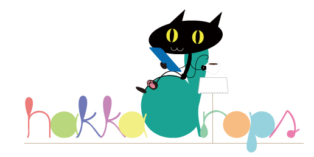

| 『マグダラなマリア』〜マリアさんの夢は夜とかに開く！ 魔愚堕裸屋、ついに開店〜 | |
| 湯澤幸一郎 | |
| (2017) | |
湯澤 幸一郎
本書に掲載されているコンテンツの著作権は、著作権法により保護されています。
これらについて、著作権法で認められるもの、規約等により許諾が明示されているものを除き、権利者に無断で転載・複製・翻訳・販売・貸与・上演・印刷・データ配信（Ｗｅｂページへの転載など送信可能化を含む）・改ざん等する行為は、固く禁じられています。
マリア・マグダレーナ ウィーンの歌手で女優で高級娼婦。欧州の政財界に強い影響力を持つ。巡業で得た資金で高級娼館『魔愚堕裸屋』を開店。
ローズマリー（ソフィ・クラウス） 不幸ながらも気丈で骨太な少女。父親に命じられてマッチ売りをしていたが、父親の借金返済のために魔愚堕裸屋に身売りする。
クリッパラ（栗原龍三郎） 日本の広告代理店「電々通」の社員。ウィーンにおいて魔愚堕裸屋の営業を担当。
エルキュール・アポロ ベルギーで暗躍するナチのスパイ。ベルギー降伏に伴い、新たな任務のために一旦オーストリアへ。女好き。
セシル アポロの助手の少女兵士であったが、マリアの意向により任を解かれる。悲惨な生い立ちの記憶は消されている。
エスメラルダ スペイン出身の高級娼婦。実はスペインのフランコ将軍の元愛人。グレイスの出現によって愛人の座から転落し、恨みを持つ。それを隠して魔愚堕裸屋に。
アンナ・エーデルマン ナチＳＳの女性高官。作戦本部所属で階級は少佐。セシルをはじめとする少女兵士プロジェクトの発案者だった。
ペーター・グルテン かつて映画『つっぱりペーター』シリーズで人気を博した子役上がりの俳優。ハリウッドに行くも芽が出ず、ウィーンに出戻り。
コバーケン イギリス貴族の執事からイスタンブール貴族の執事を経て、魔愚堕裸屋執事となる。慇懃無礼。盗み食いや拾い食いのクセがある。
グレイス 高級娼婦。マリアの親友にしてマネージャー的立場。しょっちゅう品のない冗談を言う。
オットー・クラウス ソフィの父親。アル中でヤク中。妻が亡くなってから身を持ち崩す。一攫千金を夢見て借金を重ねている。
１９４０年頃のウィーン。オーストリアはすでにドイツに併合され、まもなく日独伊三国軍事同盟が結ばれようとしている時期。
幕が閉まっている。舞台下手に空き缶。
アコーディオン弾きが現れる。空き缶の傍らに座り、一分ほど序曲代わりのメドレー。徐々に客電落ちて行く。
と、上手からみすぼらしい姿のオットー・クラウスが現れる。小さなビンで酒を飲んでいる。
オットー ちくしょうそれにしても暑いな。（ビンを見て）飲んでるからか。いや、酒飲んでりゃ汗をかく、汗をかきゃ涼しくなる。そりゃ間違いない。だから涼を取るためにオレは飲んでるんであって、決して酔っぱらって暑いってんじゃあねえ。...まあ寒くなったら寒くなったで、その時は暖を取るために飲まなきゃならんけどね。へへへ。
クラクション。ブオン！と車の音とヘッドライトの明かり。轢かれそうになって慌ててよけるオットー。
オットー わわわ。てめえコノヤロ死にてえのか！このお！...イイ車だったな。当たっちまえば良かったな。...いやいやいや、もうそんな必要ねえんだった。いけねえいけねえ。
アコ弾きに気付き、
オットー お、手風琴か。こいつは粋だねえ。おつだねえ。どれどれ、へへ、
と巾着を出しながら近づき、空き缶にコインを入れる。礼をしながら弾き続けるアコ弾き。
オットー いいっていいって。今はそれっぽっちだけどね、ここだけの話、もうすぐオレはドカンと億万長者になるんだ。分かる？億万長者。大富豪ってやつだよ。こんなナリしてっけど、オレはここ（頭）の出来がちいと違う。いいか？金持ちになりたいと思ったら、金を稼いじゃダメなんだ。金は稼ぐもんじゃなくて、作るもんなんだよ。へへ。意味分かる？つまりだ、誰か上の人間に「アンタはいくら、こいつはいくら」って給金決められてるようじゃ、いつまで経っても埒があかねえ。金が集まる仕組み、人を働かす仕組みを作るんだ。その胴元になって初めて、うなるような金が懐に入って来る。うなるようなね。「ンー、ムォオオ！」って。...信じてねえだろ。まあいいや。みんなそうだ。信じてくれるのはウチの娘だけだよ。だが見てな。お前さんと今度会う時は、この空き缶の中に千倍万倍の金を放り込んでやる。せいぜいそれまでに一斗缶、いやドラム缶を用意しておくがいいよ。これ本当。...そうだ、
もう一枚コインを取り出して、
オットー 兄ちゃん、ちょいとそこで電話したいんだがね、オレの億万長者への扉を開ける電話なんだ。
コインを入れて、
オットー それにふさわしいやつをひとつ頼むよ。
アコ弾き、「威風堂々」。
オットー いいねいいね。その感じ。
オットー、電話に向かう。
オットー えー、十三丁目のゴースト商会さんをお願いしたいんだがね。...うひひ。（ジュルルっと）ヨダレ出ちまった。ああ、こちらオットー・クラウスです。ええ、スペインの海老の件で。海老です海老。三ヶ月前に出資金をお預けしておいたやつですよ。今日最初の配当を戴けるお約束だったんで、そちらにお伺いする前にご確認を、...じゃあヴァルターさんを出して下さい。ヴァルターさんならご存知...、いない？いつお戻りで？...初めからいない？いや、ヴァルターさんですよ。あれ、そちらゴースト商会さんですよね？ええ。で、ヴァルターさんは...、いない。あれ？おかしいな。へへへ。辞めたとかではなくぅ？...いない。なるほど。へへへ。...あのー、ひとつ伺いたいんですが、スペイン人ってえのは海老なんて食べないですよね？...食べますよねえ。そりゃ食べますよ、海老は美味いですからね。ええ私も大好きですよ。小エビをザッと揚げたやつなんかね、
アコ弾き、演奏止めて空き缶を持ってそそくさと去る。
オットー あ、ちょっと、（電話に）あ、じゃ失礼します。ちょっと待って、
オットー、追って去る。改めてフルオケの「威風堂々」。
幕が開くとバーンズコレクションが退廃したような空間。壁にはナチに「退廃芸術」の烙印を押された作家たちや丸尾末広の絵画が所狭しと飾られている。
グレイスとコバーケンがイスやテーブル、内装品などを動かしながらそそくさと働いている。ひとつのテーブルの上には、いろいろな置物などが入っているらしい段ボール、もしくは木箱が載っている。クリッパラ入ってくる。
クリッパラ どうですどうです、この選曲。
グレイス 何？
クリッパラ （花輪とか動かしながら）これですよ。「威風堂々」。
グレイス ああ、悪くないんじゃない。でもワーグナーじゃないの、ご時世的に。
クリッパラ ワーグナーはヒロイック過ぎて嫌だってマリアさんがおっしゃるんで。
グレイス あそう。だからってわざわざエゲレス人の曲にしなくてもねえ。
グレイス、部屋の時計のある方向を見て、
グレイス あらちょっと、もう五分しか無いじゃないの。
コバーケン 五分前に十分しかありませんでしたからそうなりますね。
グレイス エスメラルダは？
コバーケン 届け物をお受け取りにエントランスに出たようで。これ（招き猫とか布袋様とか）はどちらに？
グレイス （見てない）何？
コバーケン 縁起の良さそうな置物です。
グレイス どこでもいいわよ。どっか邪魔にならなそうなトコ置いといて。
コバーケン かしこまりました。
コバーケン、凄く邪魔になりそうなところに置く。
クリッパラ これ（悪魔が頬杖をついているようなオブジェ）は？
グレイス 何？
クリッパラ 縁起の悪そうな置物です。
グレイス まかせるから。好きなとこ置いて。
クリッパラ はい。
コバーケン グレイス様。
グレイス 何。
コバーケン さきほど「もう五分しか無い」とおっしゃいましたが、それは違います。そんな時は「まだ五分もある」とお考えになれば、
グレイス もう五分しか無いのよ！
コバーケン もう五分しか無いですよねえ。
グレイス 口はいいから手を動かしてちょうだい。
コバーケン これはしたり。バイト先のチーフのようなことをおっしゃいますですね。
グレイス 似たようなもんでしょうよ。
コバーケン つかぬ事を伺いますが、グレイス様は近頃お太りになったのでは？
慌てるクリッパラ。
グレイス はあ？
コバーケン ですから、近頃お太りに、
グレイス それ今話さないとダメ？
コバーケン いや、自然な流れで聞いたら角も立たないかなあと思って。
クリッパラ 思いっきり不自然ですよ。
コバーケン これはしたり。いや、クリッパラ様がね、
クリッパラ だー！何も、オレ何も言ってないでしょ。
グレイス うるさいわね太ってないわよ！
コバーケン 気のせいのようですよクリッパラ様。
と、グレイスがテーブルかイスを持ち上げたときに「ブチッ」と音。
グレイス あ。
コバーケンとクリッパラは気付いていない。グレイスはコルセットの背中を気にして、ヒモを締め直したりしている。
コバーケン ちなみに「これはしたり」ってどういう意味ですか。
クリッパラ え、オレに訊くんですか。
コバーケン クリッパラ様は日本人でしょう。
クリッパラ いやまあそうですけど。え？コバーケンさんは？
コバーケン スイスとどんぐり共和国のハーフです。
クリッパラ ご両親はどんな出会いだったんですか。
コバーケン 「コレハシタリ」ッテ何デスカ。
クリッパラ なんで急にカタコトなんですか。良く判んないですけど、これはしたりあれはしなかったりっとかそういうアレじゃないですかね。
コバーケン え？じゃあどれはしたり？
クリッパラ どれはじゃないです、そういうことじゃないでしょ。
コバーケン あれもしたり？それもしたり？
グレイス あれもそれもどれもしないわよ。いいからさっさとしてちょうだい。
コバーケン ふはははは、盛りのついた雌犬め。
クリッパラ 最低だこの人。
グレイス 意味は二種類あるわよ。
クリッパラ はい？
グレイス 「やったぞ！」っていう肯定的な場合と、「やっちまった！」っていう否定的な場合と。
クリッパラ あ、ああ、「これはしたり」ね。
グレイス 朝ベッドで目覚めてどっちになるかは相手の女のスッピン次第よね。グフフフフ。
クリッパラ はあ、
グレイス クリッパラもだらしないわね。あんた日本じゃエリートなんでしょ。
コバーケン えーそうなんですか。
クリッパラ まあ、こう見えても東京外国語学校の独語学科を主席で卒業後、日本を代表する広告代理店であるところの電々通にスルッと入社いたしまして、（異例の速さでウィーン支社勤務の大役を仰せつかりました）
エスメラルダ出て来て、
エスメラルダ ごめんあさーせ。
クリッパラ えー。
エスメラルダ どなたか殿方のお力が必要だわ。
コバーケン よろこんで！
コバーケン、エスメラルダとともにエントランスへ去る。
グレイス その学校って、
クリッパラ はい？ああはいはい、
グレイス つまりスパイ養成所よね。
クリッパラ え？あー、僕は違いますけど、同期には結構いますね。
グレイス 主席で卒業なさったのに、お国のために働かないなんて。
クリッパラ ドキ。
グレイス なーんて言われないの？
クリッパラ たまーに。あはははは。
グレイス フン！（気合いを入れて睨む）
クリッパラ ！...やっべえ超睨んでる。超怪しんでる。
グレイス ...まあスパイにしてはチャラ過ぎるものねえ。
クリッパラ はははは、返す言葉もありません。
グレイス ごめんなさい、このご時世、どうも疑い深くなっちゃって。
クリッパラ いやいやごもっとも。ところであと三分ですよ。
グレイス あ、そうだった。ちょっとエスメラルダ！
エスメラルダ入ってくる。
エスメラルダ はい参りました。
グレイス 油売ってないで準備なさいな。
エスメラルダ 申し訳ございません、ただいまフランコ将軍閣下からのお届け物が参りましたものですから。
クリッパラ フランコ将軍？フランコ将軍って、スペインのフランコ将軍ですか？
エスメラルダ はい。
クリッパラ すげえ。
グレイス ああフッくんね。
クリッパラ フッくんって。
コバーケン、何やら大きくて平たい包みを持って来る。
グレイス 何寄越してきたの？
コバーケン さあ。残念ながら剣先スルメじゃないことは確かですね。
エスメラルダ 油絵のようですわ。
クリッパラ 油絵。
コバーケン、包みを開ける。
グレイス ああそうだ、スペイン公演のとき途中まで描いてもらったんだったわ。やっと仕上がったのね。
コバーケン 油絵ね。それはそれで美味そうじゃないですか。あぶらげみたいで。
クリッパラ 喰えませんよ。喰ったら高確率で死にますよ。
コバーケン おお、これはなかなか。
コバーケン、絵を立てて見せる。マリアとグレイスが描かれた肖像画。マリアはものすごく美化されたレンブラント風のまともな描写、グレイスだけバリバリのキュビズム。
エスメラルダ まあ素敵。
クリッパラ さすがピカソの国ですね。
グレイス ちょっと待って、何これ？これアタシ？
コバーケン 白っぽいからそうじゃないですか。
グレイス 白っぽいって、そんなザックリな認識なの？アタシだけ画風が違いすぎない？この美貌が行方不明になってない？
エスメラルダ それだけキャラが立ってるってことですわよ。
グレイス んー、ならいいけど。
クリッパラ ならいいんだ。
コバーケン へー、フルチンコ将軍、絵がお上手でらっしゃるんですね。
クリッパラ いや本人が描いたんじゃないでしょう。しかもフルチンコ将軍てなんですか。イヤですよそんな将軍。フルチンで全軍指揮とか。
グレイス 全軍、突撃！
クリッパラ いいからやらなくて。なんでそういう時だけ張り切るかな。
グレイス ほとばしるのよ！下ネタへの愛が！どうしようもなく！
クリッパラ じゃあ仕方ないですね。
グレイス ドラクロワの自由の女神なんておっぱい丸出しで全軍指揮してんだから、フルチンコ将軍がフルチンだっておかしくないじゃない。
クリッパラ 「フランコ」将軍です。フルチンコ将軍じゃありません。
グレイス そうだった。ベッドの中ではフルチンコ二等兵だったわ。グフフフフ。
クリッパラ この人も最低だ。
エスメラルダ マリアさんお喜びになりますわ。どこに飾りましょう。
グレイス レイアウト決めてる時間がもう無いわね。
クリッパラ 誰のせいですか。
コバーケン そんなときの私です。このコバーケンにおまかせ下さい。ふぬぬぬぬぬ、
ギュモモモモ！と波動砲のエネルギー充填的な音。
コバーケン エネルギー充填１２０％！コバーケン・アイ！
ズズーン。
壁の空き場所が「HERE」と光る。
クリッパラ 意味分かんないけどすげえ。
コバーケン 「コバーケン・アイが使われたのは後にも先にもこの時だけであった」
クリッパラ なぜ今使った。
グレイス （全然違うところ）あそこがイイんじゃない？置物の上あたり。
コバーケン そうですね。
クリッパラ しかも無駄撃ち？
グレイス さっさと飾って。
コバーケン／クリッパラ はい。
グレイス エスメラルダはそれ（箱とか包みの残骸とか）片付けて。
エスメラルダ はい。
エスメラルダ、言われた物を持って下手に去る。
グレイス もう時間だわ。クリッパラがグズグズしてるから。
クリッパラ うわー、オレのせいですか。
コバーケン （作業しながら）コバーケン・ハンド！
クリッパラ うるさいな。普通じゃないですか。
コバーケン 「コバーケン・ハンドが使われたのは後にも先にも、」
クリッパラ 分かりましたって。
グレイス イス良し、テーブル良し、諸々良し、と、絵は？
コバーケン こんなもんでどうでしょう。
グレイス いいんじゃない。じゃあクリッパラ、アタシが合図出したら照明落として音楽かけて。
クリッパラ はい。
クリッパラ去る。
エスメラルダ戻って来る。
エスメラルダ もうお客様がお並びになってらっしゃいます。
グレイス じゃあいくわよ。魔愚堕裸屋、開店！
「ダー、ダララー、ラーラー、」という『威風堂々』のフレーズとともに照明ムーディな感じに。
フロアは様々な客が来ている態でザワザワと。
グレイス あらシュナイダーさん、いらしてくれたのね。お忙しいからどうかなーなんて思ってたのよ。コバーケン、ご案内して。
コバーケン はい。こちらへどうぞ。
グレイス また後でゆっくり。グフフフフ。
エスメラルダ いらっしゃいませ。初めまして、エスメラルダと申します。ええ、新しくここでお世話になることになりまして。どうぞこれからごひいきに。
グレイス あらあらローデンシュトックさん生きてたの？もうすぐソ連に行くなんて聞いてたからてっきり討ち死にしてるんじゃないかと思ってた。危なく喪に服するところだったわ。ごゆっくりね。あちらへどうぞ。
エスメラルダ まあ、ウィーンまで来て下すったの？嬉しいわ。スペインはいつお発ちに？そう、長旅お疲れさまでした。
とかなんとか。そこにナチの制服姿のアンナ・エーデルマン少佐が。怪訝そうにフロアの様子を見渡す。
アンナ ...なんだこれは。...退廃の極み。
気付いたグレイスにＳＳの敬礼。
グレイス いらっしゃいませマドモアゼル。えーと、
アンナ ドイツ労働者党・親衛隊作戦本部所属のアンナ・エーデルマン少佐である。
グレイス そうね、たぶん魚屋さんじゃないだろうとは思ったわ。
エスメラルダ でも長靴がちょっとそれっぽいですわね。
グレイス え？じゃあやっぱり魚屋さん？
アンナ 長靴だからと言って魚屋とは限らんでしょう。
グレイス え、じゃあ何？あ、ネコ？長靴を履いたネコ？
アンナ 無論ネコでもない。
グレイス なによちょっとアンタ、ノルのよそこは。長靴を履いたネコ？って言われたら「そうそう。あなた、まさかネズミのように小さなものに化けられはしないでしょうね？『何だと？余に化けられぬものなど無い！それドロドロドロ！チュウチュウ、どうだネズミだぞ』よし今だ！バリバリムシャムシャ、ニャーオ、ってネコちゃうわー！」って。
アンナ ...何をおっしゃっているのだ？
グレイス アタシ間違ってないわよね？
エスメラルダ 良くやったと思います。
アンナ 親衛隊作戦本部所属のエーデルマン少佐と言ったはずだが。
グレイス わかったわよ。じゃあ百歩譲って「長靴を履いたエーデルマン」でどう？
アンナ くどい。
グレイス はいはい、エーデルマンさんね。今までおもてなしさせていただいたことあったかしら。
アンナ バカな事を。当然お初にお目にかかる。代理で参ったのです。でなければ一生立ち入らぬところだ。
エスメラルダ 代理？
アンナ バルナック中将がお忙しくてらっしゃるのでな。
グレイス あー、猿ぐつわ好きの。
アンナ 言っておくが、本官は我が党の他の党員たちとは違う。マリア嬢にもグレイス嬢にも甘い顔をするつもりはありませんぞ。
グレイス そう残念ね。
アンナ 特にマリア嬢にはちょっとした借りもある。
グレイス あら私に返して下すっても良くってよ。マリアに渡しとくわ。
アンナ いや結構。...それにしても色好みの上官のせいでこんなところに来なければならぬとは。
グレイス 当店は女性も大歓迎いたしますけれど。
エスメラルダ ええ、それに客として来るばかりじゃござんせんからねえ。
アンナ ...それは本官への侮辱と捉えてよろしいのかな。
エスメラルダ 滅相もございません。ただ少佐のようにお美しい方でしたらさぞ、ねえ、
グレイス いるからねえ金髪好きって。パツキンのパイオツカイデーは受けるわよ。
アンナ くだらん。...一体全体この店の有様はどういうことなのだ。あの絵もあの絵もあのガラクタも、本来ならば一様に退廃芸術として皆没収されて然るべきものばかりですぞ。まさに退廃の極み。
グレイス 退廃の極み？なにそれ。テニスの必殺技？
アンナ このような店がお目こぼしに預かっているとは。吐き気がする。
グレイス あら大丈夫？横になる？
アンナ おかまいなく。だが早めに中座するつもりだ。ひとまず店内を点検させていただく。
グレイス ご自由にどうぞ。
アンナ、手帳を片手に店内を見回りながらメモを取っている。
エスメラルダ 感じ悪うございますね。
グレイス ＳＳなんて基本あんなもんよ。男だったらもうちょっと取りつく島があるんだけど。
と、そこにタキシード姿のアポロ。
アポロ グレイスさん！
グレイス あ。
アポロ いやー、お待たせしました。
グレイス 特に待ってなかったけど。ブリュッセルからわざわざ？
アポロ はい。マリアさんのお店のオープニングパーティとなれば来ない訳にはいきませんからね。はいこれお土産です。ゴディバ。
グレイス 待ってたのよお。お一人でいらしたの？
アポロ いえ、もちろんセシルも一緒です。あれ？
華やかなジャンスカにパフスリーブブラウス、ドールハットに日傘を下げたセシル来る。ぬいぐるみのケルベロスを持っている。ケルベロスも帽子にタキシード。
アポロ 居た居た。どこ行ってたんだ。
セシル 車にお土産忘れて来たと思って。
アポロ ああ失敬、僕が持って来てしまったよ。もうお渡しした。
セシル なんだ。良かった。
グレイス まあセシル、すっかり女らしくなって。これならアポロさんもロリコンって言われなくて済むわね。
アポロ ははは、余計なお世話です。
セシル お久しぶりです。その節は兄がお世話になりました。
グレイス 兄？おじさんじゃなかった？
アポロ いやまあ、兄妹ってことにした方がいろいろと、
グレイス お兄たん。その顔で。
アポロ 顔は関係ないでしょ。いや、セシルも任務から解放されましたし、叔父と姪より兄妹って方が一緒に暮らすに世間体が良いかなー、なんて。
グレイス あー、なるほどね、キモい。セシル、無理しなくていいのよ。
セシル はい、がんばります。
アポロ がんばるっておかしいだろ。そもそもキモいってなんですか。
グレイス コバーケン、これ（ゴディバ）。
コバーケン あはい。あ、チョコじゃん。
アポロ あれ？
コバーケン アポロさんじゃございませんか。セシルさんも。
アポロ あー、そうか、
コバーケン はい、こちらでお世話になることになりまして。
アポロ そいつは良かった。
グレイス セシルに「おにいたん」って呼ばせてるらしいわよ。
コバーケン ほお、そいつはキモイ。
アポロ キモくありません。そしておにいたんとは呼ばせてません。
セシル おにいたん。
アポロ やめなさい。
グレイス まんざらでもなさそうじゃないのよ。
コバーケン にぃにぃ。
アポロ なんだにぃにぃって。
グレイス （息多めで）ア、アニキ。
アポロ ニュアンスおかしいから。
セシル ...ア、ア、アニ、アニ、
グレイス もっとこう、喉の奥を閉じた状態から、あえぐように、
アポロ やんなくていい。セシルに変な事教えないで下さい。
グレイス （エスメラルダに）こちらアポロさん。ベルギーでナチスの犬をやってらっしゃるの。
アポロ ちょっと、人聞き悪過ぎるでしょ。
コバーケン わんわん。ナチスのわんわん。
セシル わんわん。
アポロ うるさい。
エスメラルダ 初めまして。エスメラルダと申します。
アポロ 腕利き調査員のアポロです。スペインの方ですね。
エスメラルダ （怪訝そうに）ええ、
アポロ エスメラルダという名ならスペインかポルトガルのご出身でしょう。そしてフラメンコダンサー特有のタコがおありだ。カスタネットのね。
エスメラルダ ご明察で。
アポロ いやいや、この程度のことは...、あ！
グレイス 何？
アポロ、セシルを引っ張って前方、もしくはテーブルの下へ。
アポロ （エスメラルダに）あれって、
エスメラルダ あれ？
アポロ あのＳＳの女性、もしかして作戦本部の、
エスメラルダ はい、エーデルマン少佐。
アポロ うわー。
グレイス どうしたの。あ、知り合い？呼ぶ？ちょっとー、
アポロ 呼ばないで！おかしいでしょ。明らかに隠れようとしてるでしょ。
グレイス 何よ、お金でも借りてんの？
アポロ なんて言うか、いろいろ込み入ってまして、一言で言えば苦手なんです。
グレイス あらなんで。パツキンのパイオツカイデーはご趣味じゃないの？
アポロ パツキンもパイオツカイデーも大好物なんですが、あの人だけはちょっと、
グレイス アンタにも苦手な女がいるのねえ。意外。じゃあコバーケン、あの人うまいこと別のフロアにご案内して。
コバーケン かしこまりました。うまいことですね。
コバーケン、エーデルマンの元へ。
コバーケン よう姉ちゃん、いいケツしてんじゃねえか。ヒュー、こいつは上玉だ。
アンナ ...
張り倒される。
アポロ 頭がおかしい。
コバーケン ハッハー、手荒い歓迎だ。だが気の強い女は嫌いじゃねえ。オレはここの執事でコバーケンってんだ。良かったら向こうでゴディバでも喰わねえか。
アポロ 人の土産を。
コバーケン きっと、うまいことだろうよ。
アポロ そこ？
コバーケン、してやったりの顔で親指立ててウインク。
グレイス まあ間違っちゃいないわね。
アポロ 間違ってます明らかに。
アンナ、ゴディバの袋を手に取り、
アンナ ゴディバ？
アンナ、ハッとして辺りを見渡す。
アポロ まずいまずい。ベルギー土産なんだから。勘付かれるでしょ。
アンナ ...遠慮なく戴こう。
アンナ、ゴディバを持ってスタスタ去る。
アポロ えー、あっさり。
グレイス 良かったわね意外にチョコ好きで。
アポロ 助かりました。
セシル ...みんなで食べたかったのに。
グレイス 大丈夫、お兄たんが今度はデメルをしこたま買ってくれるから。
セシル はい、デメル、大好きです。
アポロ ハーシーズで我慢しなさい。大体なんで彼女がここにいるんです。
エスメラルダ 代理っておっしゃってましたわよ。
アポロ 代理？
グレイス バルナック中将。アタシの馴染みなの。
アポロ ああ、猿ぐつわ好きの。
エスメラルダ 有名なんですか？
アポロ はい。
ピアノの音入る。
クリッパラ、スタンドマイクを持って出て来て、
クリッパラ グレイスさん、そろそろＭＣを。
グレイス ああそうね。オープン記念でマリアのショーがあるの。
アポロ そいつは楽しみだ。
グレイス 良かったら一緒に踊ってらして。
アポロ ええ、是非。
エスメラルダ （アポロとセシルに）わたくしがご案内します。
グレイス、壇上のマイク前に立つ。
グレイス ご来場の皆様、本日はお忙しい中魔愚堕裸屋オープニングパーティにお越しいただき誠にあざーす。マリアがずっと夢に描いていたお店にやっと皆様をお迎えできた事、非常に嬉しく思っております。
そもそもアタシが生まれた頃、ロンドンではまだ世紀末の残り香がソコここに漂っておりました。ジョルジュ・バタイユの『眼球譚』と出会って性に目覚めたアタシは、それからサドの『ジュスティーヌ』や『ソドムの百二十日』、ワイルドの『サロメ』やマゾッホの『毛皮を着たヴィーナス』なんかを手当たり次第に読みあさって、
溶暗＆台詞Ｆ・Ｏ。
グレイス ...小学校を上がる頃には悪い事は一通り済ませてたわねえ。パンを万引きしたり、線路に石置きしたり、カエルの肛門に爆竹仕込んだり。今ではみーんな良い思い出だけど。グフフフフ。中学時代には学校の全ての男性教師たちと一通りコトを済ませて、
溶暗＆台詞Ｆ・Ｏ。
グレイス 寿限無、寿限無、五劫の擦り切れ、海砂利水魚の水行末、雲来末、風来末、（喰う寝るところに住むところ、やぶら小路のぶら柑子、パイポパイポパイポのシューリンガン、シューリンガンのグーリンダイ、グーリンダイのポンポコピーのポンポコナーの長久命の長助）
とかなんとか、グレイスの半生のワンシーンがいくつか。
たまらずクリッパラ出てきて、
クリッパラ グレイスさん、グレイスさん、
グレイス なによ、これから寿限無が海賊王目指して出航する場面なのよ。
クリッパラ 長くなるんでまた別の機会に。マリアさんが待ちくたびれてます。
グレイス あらそう仕方ないわね。皆様、続きはウェブで。
クリッパラ ないですよ。
グレイス それではお待たせ致しました。当館の主人、マリア・マグダレーナによりますオープニング・ショーをお届け致します。盛大な拍手でお迎え下さい。ワンダフル、マーベラス！マリーア・マグダレーナ！
Ｍ１「ＧＯＯＤ ＤＡＹ／ＧＯＯＤ ＮＩＧＨＴ」
（マリア）
Ah!
Good day, good night, 喜ばしき日よ
Good day, good night, 麗しき夜よ
とびきりのおもてなし
めくるめく愛の褥
Good day, good night, 終わりはしない
Get it on, gonna walking,
If your heart is breaking,
夢が開くDreaming night!
Good day, good night, 待ちこがれた日よ
Good day, good night, ため息の夜よ
ムスクの香りの中で
そのカラダ投げ出せば
Good day, good night, さあもう一度
Get it on, gonna walking,
If your heart is breaking,
いつだってここはパラダイス！
Get it on, gonna walking,
If your heart is breaking,
夢は開くDreaming night!
歌終わる。暗転。後奏続いている、その音が遠くなって行く。
明かり付くと水兵姿のペーター・グルテンが台本を持って立っている。
ペーター ハァアーイ！ボクの名前はペーター・グルテン！ヨーロッパじゃちょっとは知られた映画スターさ。ボクの代表作『つっぱりペーター』シリーズはご存知だよね？スクリーンのボクの大活躍を見て育ったウィーンっ子も多いんじゃないかな？（咳払いして）「つっぱりペーター、これにて一件落着！」
ペーターが鼻の下を擦ると、チロリロリン、と音が鳴る。
ペーター 今の懐かしかった？ま、常に前進あるのみのボクに取っちゃあ、とっくに過去の思い出だけど。最近のボクはどうしてたかっていうと、ヨーロッパでの勢いに乗じてハリウッドに殴り込み！シャリー・テンプルやジュディ・ガーランドに続け！...となるはずだったんだけど、あいにく戦争のおかげで、アメリカじゃオーストリアの天才少年子役の出番は無くなっちゃったんだよねー。
と、そこにマッチの入ったカゴを手に提げたソフィー・クラウスが重そうな足取りで現れる。
ペーター ま、ボクの隠し切れない知性やエスプリが、アメリカ人には理解不能だったってこともあるかな。精神的ブルジョワジーって、いつの時代も俗な大衆には敷居が高く思われちゃうのかもねー。
ソフィー、ペーターの隣りにやって来て、耳元で、
ソフィー ...マッチ。
ペーター わ。
ソフィー 今なんて言った？（口だけ「マッチ」と動かす）
ペーター は？
ソフィー 今なんて言った？（口だけ「マッチ」と動かす）
ペーター ごめんちょっと今、
ソフィー 聞いてなかったの？仕方ないなあ。ヒント。「マ」。
ペーター ごめんちょっとウザい。
ソフィー もう、マッチでしょう？
ペーター あのー、ファンのコかな？悪いけどボク今仕事中なんだ。まあプライベートでも放っといて欲しい派なんだけどね。
ソフィー （バカっぽく）仕事中？
ペーター そう。分かるよね、ボクの仕事。「これにて、一件落着！」。
チロリロリン。
しかしソフィーは特にリアクションもなく、
ソフィー アタシも、仕事中。フフッ。
ペーター ...ああそう、じゃあなおさら、
ソフィー マッチを、買って下さーい。
ペーター マッチを？
ソフィー マッチを、買って、く、だ、さ、
ペーター 聞こえてる。マッチね。申し訳ないけど、ボクはタバコも吸わないし、今は真夏じゃないか。別段マッチは要り用ではないよ。
ソフィー ああっ！
盛大にコケる。カゴからマッチ箱がぶちまけられる。
ペーター え？大丈夫？
ソフィー てへ、やっちゃった。
ペーター ドジっこアピール。ってゆうか何にコケた？
ソフィー （マッチ拾いつつ）心のつまづきどころは、人には分からないものなの。
ペーター （拾うの手伝いつつ）そうだね。ちっとも分からなかったよ。
ソフィー ああっ！
無理矢理、ひねりが入るくらいの勢いでコケる。
ペーター また？
今度はマッチ棒がバラまかれる。
ペーター だ、大丈夫？
ソフィー てへ、またやっちゃった。
ペーター ...再びドジっこアピール。そしてマッチ箱からマッチ棒への細分化。ドジっこのフラクタル構造だ。これはただ者じゃない。
ソフィー ググー、ギュルルルル。やだ、腹ペコでお腹鳴っちゃった。恥ずかしい。
ペーター え、今の口で言ったよね？
ソフィー ！...口でイッたですって？やだ、...やらしい。
ペーター いやいやいや、とらえ方がおかしいでしょ。
ソフィー くわえ方がおかしい？
ペーター 言ってないし。
ソフィー イッて、ない？
ペーター あの、無理矢理エロにねじ曲げるのはやめてくれないかな。
ソフィー 無理矢理エロ親父にまたがるなんてしてないわ！
ペーター 全然違う！エロ以外ひとつも合って無いし。本当に、ボクがエロいみたいに見えちゃうからやめて。
ソフィー ああっ、ごめんなさい、アタシ不思議の国のアリスが好きで、ついつい語呂合わせのクセが。
ペーター アリスにそんなエロい語呂合わせないでしょ。ルイス・キャロルに失礼だよ。（拾ったマッチを渡し）...はい、これで全部。仕事に戻りな。
と、ふとソフィーの顔を見つめる。
ソフィー なに？
ペーター あ、いや。骨太なだけかと思ったら、結構可愛いんだなって。
ソフィー ...ありがとう。これ、お礼に一本差し上げます。
ペーター ああ、どうも。って要らないよ。ファンレターに貼ってあるプリクラくらい要らないよ。
ソフィー それでも、一本五百円なの。
ペーター 一本？五百？しかもウィーンなのに円？ぼったくりもいいところだ。
ソフィー もしかして、マッチの使い方知らないの？
ペーター え？
ソフィー マッチの、つ、か、い、か、
ペーター 聞こえてる。君と違ってちゃんと聞こえてるし、使い方も分かってる。
ソフィー ウソ。
ペーター ウソじゃないよ。
ソフィー マッチ売りの少女は、自分を照らしてもらうためにマッチを売るのです。
ペーター うん？
Ｍ２「マッチと少女」
（ソフィー）
細いマッチで売る夢は
幼く淫らな赤い花
悲しき運命と知りながら
今宵も開く彼岸花
（ペーター）
細いマッチで見る夢は
哀しく貧しい夜の花
あまたの男に覗かれて
涙も涸れた無想花
（ソフィー／ペーター）
灯る炎
照らす夢は
束の間の幻 やがて
闇に溶け行く
間奏八小節。ソフィーとペーターのダンス。
（ソフィー／ペーター）
灯る炎
照らす夢は
束の間の幻 やがて
闇に溶け行く
（ソフィー／ペーター）
細いマッチが売る夢は
いくつになったら覚めるかな
夜に開いた燐の花
炎が消えたら
さようなら
歌終わる。
ソフィー そのマッチに火が灯っている間、アタシのカラダのどこでも照らして、覗いてたもれ。...恥ずかしい！
ソフィー、スカートをたくし上げる。
ペーター ああ、突っ込みどころが多過ぎて面倒くさい。
ソフィー 突っ込みどころ？
ペーター ゴメン、悪かった。今のはボクが悪かった。...つまりこういうことだ。マッチ売りの少女とは、実のところマッチを使った個人事業主の風俗嬢ってわけだね。
ソフィー ...（思案顔で頭を傾ける）
ペーター 分からなくていいよ。ボクが分かればそれでいいから。
ソフィー 難しい事は分からないけど、インテリゲンちゃんは嫌いじゃないわ。
ペーター インテリゲンチャね。
ソフィー ここじゃなんだから、あちらへ。
ソフィー、ペーターの手を取って街灯の下に行く。
ペーター あ、ああ。...ねえ、なんでこんなことしてるの。
ソフィー、ドロワーズ脱ぎながら、
ソフィー 説教？
ペーター いや。単純に不思議で。
ソフィー お金が必要だから。決まってるでしょ。
ペーター もっと普通の仕事もあるじゃないか。お針子さんとか女給さんとか。
ソフィー お針子さんも女給さんも、男にだってできちゃう仕事でしょう？マッチ売りの少女は少女にしかできないもの。
ペーター そりゃそうだけど。
ソフィー って、パパが言ってた。
ペーター パパ。お父さんがいるの。
ソフィー そりゃいるわ。パパがいなかったらアタシ産まれてないもの。
ペーター ああ、うん、でもお父さんがいるなら、
ソフィー パパはもうすぐお金持ちになるの。
ペーター ...そうなの。
ソフィー 知ってる？スペイン人って、海老を食べないのよ。
ペーター へえ。
ソフィー フフッ、バカよね。スペインの海に海老が沢山いても、それを誰も売り物にしようなんて思わないから、タダ同然なの。だから海老を沢山養殖して、それを日本や中国に売れば大儲け出来るんだって。
ペーター そうなんだ。
ソフィー あ、これ秘密ね。言ったら殺すから。フフッ。
ペーター あ、...うん。
ソフィー だからマッチ売りの少女ももうすぐ卒業。やっとよ。もう三年もこの仕事してたの。
ソフィー、ペーターにマッチ箱を渡し、自分はワインの木箱の上に座る。
ソフィー どうぞ。...それとも、アタシのは見たくない？
ペーター ...いや、
ソフィー ...どうぞ。
ソフィー、脚を開く。ペーター、マッチに火をつけると、ソフィーの脚の間を照らす。
ペーター あ、...剃ってるの？
ソフィー その方がよく見えるでしょ？
ペーター すごく、綺麗だ。
と、ペーターの背後からオットーが現れ、ペーターと並んでソフィーを見ている。
オットー 炎っていうのは、女の肌をキレイに見せる。
ペーター 確かに。
オットー 赤い炎の波長の長さが、美しさにふるいをかけるんだ。
ペーター なるほど。...え？
ペーター、すぐ横にオットーの顔がある事に驚く。
ペーター わ。（マッチの炎で）あち、あちちちち、
オットー あららもったいない。あと五秒分はあったのに。
ソフィー パパ。
ペーター おと、お父さん？
オットー あ。
オットー、突然気付いたようにペーターの襟首をつかんで、
オットー てめえコノヤロ、ウチの娘に何してんだ。
ペーター いやいやいや、
オットー ん、アンタ、どっかで見た事あるぞ。
ペーター 人違いでーす。
オットー どうでもいいや。とにかく、このオトシマエはつけてもらうからな。
ソフィー パパ止めて。どうしたの。
オットー ソフィーは黙ってろ。
ペーター 美人局か。美人局か。
ソフィー 違う。そんなんじゃない。
オットー、パッと手を離し、
オットー 謝罪も反省もしなくていい。金だけ置いてってくれ。
ペーター ほらやっぱり美人局じゃないか。
ソフィー この人にはサービスでマッチをあげたの。
オットー なんだと。この中にお前の好きにして良いマッチなんか一本もないんだよ。近頃儲けがないと思ったら、とんだアバズレだな。
ソフィー （前を押さえて）もう毛が無いのは剃っちゃったからよ。
オットー うるさい、（殴る）口答えは許さんぞ。
ソフィー ウエーン。
ペーター あんた自分の娘にこんな事させて恥ずかしくないのか。それにもう毛がないのはアンタの方じゃないか。
オットー 失礼な事言うな。好きでハゲ散らかしてんじゃないよ。
ペーター このコがやたらエロ語呂合わせなのも合点がいった。アンタみたいな情けない父親にこんな仕事やらされて、頭がすっかりエロモードになっちまったからだ。
オットー だったら何だってんだ。自分の娘に何させようとオレの勝手じゃないか。
ペーター このコの人権はどうなるんだよ。
オットー 子供に人権なんかないよ！
ペーター なんて親だ。恥知らずめ。
オットー うるさい。いいから払え。謝罪も反省もしなくていいから払え。
ペーター 払うよ。払えばいいんだろ。
オットー ...なんだ。物わかりのいい兄ちゃんで良かったよ。危なく伝説のフラッシュ・サンダー・トルネードを繰り出すところだった。チビとか言って悪かったね。
ペーター 言ってないよね？今初めて言ったよねチビって。
オットー こりゃうっかり。じゃあチビとか言わなくて悪かったね。
ペーター いいよもうどっちでも。ほら。
オットー ...五百円？
ペーター マッチ一本分だろう。それ以上はビタ一文払わないよ。本当は損した五秒分は割り引いて欲しいくらいだ。
オットー コノヤロウ、オレが人の良さそうな顔してるからってつけあがるなよ。有り金全部置いて行け。
ペーター お断りだね。
オットー チビのくせに生意気だぞ。
ペーター ハゲに言われたくないよ。
オットー なんだと。だったら金の代わりに髪の毛全部よこせ。
ペーター なんでだよ。チビの上にハゲになれってのか。
オットー イヤだってのか。
ペーター イヤに決まってんだろ。
オットー このお！
オットー、ペーターに殴りかかって乱闘。やたらキレがいい。
ソフィー やめて、チビとハゲでケンカするのはやめて！
と、そこにアンナ・エーデルマンが。ゴディバの紙袋を持っている。
アンナ なんだアレは？
ソフィー お願いです、止めて下さい。
アンナ 痴話喧嘩か。
ソフィー チビハゲ喧嘩です。
アンナ それは不毛だ。
エーデルマン、二人の中に入って簡単に乱闘を止める。吹っ飛ばされる二人。
ペーター あたたたた、このお、あ、エーデルマンさん。
アンナ どうしたというのだ。
オットー 痛ってえ、折れた！こりゃ歯が折れたぞ。弁償してもら、...わ、ＳＳ？
アンナ ゲシュタポを呼ぶぞ。騒乱罪でしょっぴかれたいのか。
オットー めめめ滅相も無い。...いや、いっそ、その方が楽かも知れねえなあ。
へたり込むオットー。アンナ、ソフィーを見やってから、
アンナ ペーター・グルテン、こんな喧嘩で怪我でもしたらつまらんぞ。
ペーター すみません。つーか今ので怪我しました。
アンナ マッチ売りの少女にチビとハゲ。そうか、大体事情は分かった。二人であの少女の腕を両側から引っ張り合ってみるが良い。
ペーター いや、分かって無いじゃないですか。なんで大岡裁きみたいになってんですか。
アンナ ん、違うのか。越前的なアレではないのか。
ペーター 違います。
オットー あいつはオレの娘で。
アンナ （ペーターに）お前も自分の娘だというのだろう。
ペーター いや、明らかに親子じゃないでしょう。
アンナ ものすごく年上の嫁をもらって、その連れ子という可能性だって、
ペーター なんでそんな複雑にするんですか。
アンナ なるほど読めた。私が小判を一両足して四両にしてやろう。お前らが二両ずつ分け合えば、（三方一両の損となって、）
ペーター いいから大岡裁きから離れて下さい。
アンナ 越前的なアレではないのか。
ペーター 越前的なアレってのが良く判りませんけど、違いますねハイ。
アンナ しまった。
ペーター なんです。
アンナ 小判の持ち合わせがなかった。
と、紙袋の中から一粒取り出し、
アンナ ゴディバでもよろしいか。
ペーター どうでもいいです。
ソフィー ゴディバ？
ペーター 食いついた。
ソフィー、エーデルマンに、というかゴディバに駆け寄って、
ソフィー ゴ、ゴディバって、あのゴディバですか？
アンナ うん？
ソフィー 百チョコレートの王、ゴディバですか？
アンナ 百チョコレートの王？
ペーター 百獣の王みたいな。
アンナ さよう、百チョコレートの王、ゴディバだ。
ソフィー （明治チョコレートの節で）「チョコレイトは、ゴディバ」。
「チョコレートはロッテ」の節とか、「お値段以上、ニトリ」とか、日替わりで適当に。
アンナ それだ。
ペーター 明治が怒りますよ。
ソフィー 本当にあったんだ。パパ、見て、ゴディバよ。あのゴディバよ。
オットー ...バカなコト言うな。本物のゴディバなんて、
アンナ ほら。よく見ろ。
オットー ...まさか、これ、
アンナ ああ。
オットー ...神話じゃなかったのか。
ペーター 神話じゃないでしょ最初っから。
アンナ 良かったらそれは持ってゆけ。
オットー いいんですか？
アンナ うむ。
オットー だって、今うちらがこれをもらってしまったら、アンタ今月どうやって暮らすつもりなんです。
ペーター どんだけ貧乏なんだよ。
アンナ 気にするな。まだ沢山ある。
オットー さいですか。じゃ、遠慮なく。
アンナ ペーター・グルテン、例の件について話がある。時間はあるか。
ペーター はい。
ソフィー 仕事中って言ってたのに。
ペーター これも仕事なんだ。
エーデルマン、ビシッとペーター張り倒し、
アンナ 他言は無用。
ペーター ...すみません。
オットー （殴られたペーター見て）ウヒヒヒヒ。
アンナ おいハゲ。
気付かないオットー。
アンナ ハゲ。お前だ。
オットー え、オレですか。
アンナ 他に誰がいる。
オットー ...あー、（ちょっと探して）はい。
アンナ 男親たるもの、年端も行かぬ娘にみだらな商売をさせるとは感心せんな。
オットー ...へえ、
アンナ 名はなんという。
オットー オットーです。オットー・クラウス。
アンナ オットー・クラウス・ハゲ。
オットー いえ、ハゲは苗字じゃないんです。
アンナ オットー・ハゲ・クラウスか。
オットー いや、ミドルネームでもなくて、
アンナ じゃあハゲ・オットー、
オットー 位置の問題じゃなくて、要らないんですハゲは。
アンナ 要らないのか。オットー・クラウス...
オットー はい、
アンナ ウィズアウト・ハゲ。
オットー あー、ウィズアウトならあえて付けなくても、
アンナ うん？
オットー じゃあそれでいいです。ウィズアウト・ハゲです。
アンナ なるほど。あなたは？フロイライン。
ソフィー ソフィーと申します。
アンナ オットーにソフィー。覚えておこう。親衛隊作戦本部のエーデルマン少佐である。次に会う時までに、父親の甲斐性でもうちょっとマシなベベを着せてやれ。行くぞ。
ペーター はい。
去り際、ペーターとオットーは「ハゲ！」「チビ！」とコソコソ罵り合う。
ソフィー （憧憬の視線で）...エーデルマン少佐。
オットー チクショウ、結構いい女だったな。へへへ、いや、お前も負けちゃいないがな。へへへ。...これ（ゴディバ）、喰うか？
ソフィー パパ、もしかして、お金が儲からなかったの？
オットー、ゴディバをポケットにしまいながら、
オットー ...儲からなかったっていうとアレだな。あのー、
ソフィー もしかして、また騙され、
オットー 騙されてなんかないよ！騙されたんじゃなくて、えーとあのー、わざとだよ！わざと引っかかってやったんだよ！
ソフィー なんでそんな必要があるのよ。
オットー 器だ。人間としての器だよ。わざと引っかかるくらいの余裕を持ってこそ男ってのは、
ソフィー そんな余裕がどこにあるのよ！
オットー ないよ！そりゃないよ。分かってる。
ソフィー もうやだ。言ったじゃない。パパ、アタシにエビ食い放題にさせてやるって言ったじゃない。エビを食べて食べて腰が曲がってエビになるくらいに喰ってみろって言ったじゃない。
オットー バカ野郎、本気にするな！エビ喰ったって腰は曲がらないんだよ！
ソフィー 分かってるわよ！私だってソコを本気にしちゃいないわよ！...これで何度目なの？
オットー 知るか。
ソフィー 知ってよ！圧力鍋だって不良品つかまされて大損だったし、薄めて使う洗剤だって持ちが良過ぎて在庫が溜まり放題だったし。もう一攫千金なんてやめて地道に働けばいいじゃない。
オットー それで金が返せるならとっくにそうしてるよ！まともに働いたって、もう一生かかっても間に合わないんだよ。
ソフィー だからってアタシだけマッチを売って、パパは博打を打ってだなんておかしいと思わない？
オットー 黙れブス！
オットー、ソフィーを再び殴ろうとするが、逆に殴られる。
オットー グエ！
ソフィー ご、ごめんなさい。大丈夫？でも今のはパパが悪い。ブスだなんて、この人たち（観客）を侮辱するから。
オットー いやお前に言ったつもりだったんだけど、
ソフィー だったらなおさらよ。アタシがブスだったらこの人たちはどうなるの？
オットー ...へへへ、娘ってのは、いつの日か親父より強くなるもんだな。
ソフィー ...そう、でもない、と思うけど。
オットー、ガバッと土下座して、
オットー 頼む！
ソフィー 何？
オットー パパの一生のお願いだ！これ、ゴ、ゴディバやるから、頼む！
ソフィー 何よ？
オットー、顔を上げ、もう一度頭を下げる。と、マリアの笑い声聞こえて来る。音。 暗転。
マリアがイスに座って崩れ落ちそうに大笑いしている。グレイスが複雑な表情で立っている。
マリア ヒー、ヒー、はあ、あー、お腹痛い。
グレイス やっぱり可笑しい？そんなに可笑しい？
マリア ごめんなさい、そういうんじゃなくて、
マリア、肖像画を見て、
マリア ウッフッフッ、くー！
グレイス 可笑しいんじゃないのよ！
マリア いや、素敵よ。良いと思うわ。
グレイス そりゃアンタはキレイに描いてもらったからご満足でしょうよ。
マリア やっぱりアレね、画家の目ってのは大したモンね。内面を見るって言うの？隠せないもんなのよ。
グレイス アタシの内面こんなジャキジャキしてないわよ。
マリア まあでも見えたのよねえ、きっと。そうじゃなきゃこんな風に描くはずないもの。
グレイス 内面なんていいから、このあからさまな美貌を忠実に描いていただきたかったわ。
マリア、店の中を感慨深げに見渡して、
マリア ...やっと、出来たわね。
グレイス そうね。
マリア ヨーロッパ中をかけずり回って。
グレイス マリアも一国一城の主ってわけね。
マリア ノイシュヴァンシュタイン城とはいかなかったけど。
グレイス あんなの掃除が大変だわよ。どうせアンタはやらないんだから。
マリア 向いてないから仕方ないわ。実用品じゃないんだもの。
グレイス ...そうね。アタシは地べたに根っこを張って、マリアはキレイに咲いてる。それでいいのよ。
マリア 分かんないわよ。ジャガイモや大根みたいに根っこが主役ってこともあるし。
グレイス どっちにしたって地味じゃないのよ。
マリア 大根って訳じゃないけど、グレイス、ちょっと太った？
グレイス ...
マリア あら？
グレイス おっぱいが大きくなったからそう見えるんじゃない？
マリア 違うでしょ。太ったから胸も大きくなったんでしょ。あれ？グレイスって前に何か言ってたわよね。
グレイス 何よ。
マリア 何だっけ。「『痩せるとさー、胸から落ちちゃうんだよねー、だからヘタに痩せられなくってー』とか言う女いるじゃない、痩せてから言えって話よねグフフフフ！」とかって。
グレイス あー、...言ってた、かしらねえ。
マリア グレイスはそんな言い訳しないわよねえ。
グレイス もちろんよ。だって太ってないし。
マリア ふうん。ちょっと二の腕触らして。
グレイス シャーッ！
マリア 何よ。
グレイス 何よって何よ。この二の腕にはアタシの愛と悲しみが詰まってんのよ。誰にも触れられたくないの。二の腕がブルブルと震える時、女の愛と悲しみも共に打ち震えるものなのよ。
マリア いい感じで言ったってダメよ。単に食べ過ぎでしょ。
グレイス はうっ。
アポロが下手より颯爽と。
アポロ 確かに。
グレイス む。
アポロ 昨日久しぶりにお会いした時、多少お肥えになったような印象でしたね。
マリア お肥えにねえ。
アポロ マリアさん、昨日はお疲れさまでした。
マリア ありがと。わざわざベルギーから来て下さるなんて思ってなかったから嬉しいわ。ホテルは近いんでしたっけ？
アポロ はい。二丁目のアポランターホテルに。
マリア 「兄妹」で。
アポロ ええ。兄妹で。
グレイス アタシそんなに太った？
アポロ いや、ちょっとですよ、ほんのちょっと。リンゴ三個分がリンゴ四個分になった程度です。
マリア それ結構増えてるわよね。
グレイス いいの！ちょっと肉付きいい方が実用品としては男受けするのよ。
アポロ そうそう、ダンサーみたいなスレンダータイプはどうも骨がガンガン当たっちゃってねえ。それはさておき、
マリア え？そうなの？ダンサーってそうなの？
アポロ いやあの、
グレイス ガンガン当たるの？どこらへんが当たるの？
マリア やっぱカラダ柔らかいのよね？
グレイス いろいろアクロバチックなポージングが試せるのよね？
アポロ いいから！
マリア 何よ自分で言い出しといて。
グレイス ねえー。
アポロ セシルのことで、お二人にご相談があるのです。
マリア セシルのこと？
グレイス あらなに、お兄たんは心配性ってやつ？
マリア そうねえ、ブラのカップはワンサイズ大きめにしといた方がいいわよ。
グレイス そうそう、背中と脇からズズッと持ってくれば、結構埋まるもんなのよ。
アポロ はあ？
マリア セシルの歳なら、まだレース付きは早いわね。
グレイス ええ、コットンの野暮ったいタイプが逆に受けるはずよ。
マリア そうそうそう。
アポロ 別にセシルのブラジャー選びで悩んでる訳じゃありません。受けるってなんですか。誰に受けるんですか。
マリア／グレイス おにいたん。
アポロ 言うと思いましたよ。ブラ談義は置いといて、ご存知のようにドイツは今年、ベルギーの占領に成功しました。
マリア そうらしいわね。
アポロ もちろんこの腕利き調査員の暗躍があったからなんですが。
マリア そりゃご苦労様でした。セシルにはもう、仕事はさせてないのよね。
アポロ もちろんです。マリアさんが上層部に掛け合ってくれたおかげで、あれ以来セシルに限らず、全ての少女たちが危険な任務から解放されました。
マリア 良かったわ。
グレイス マリアもたまにはいいことするのよね。
マリア たーまにーはねー。
アポロ しかし今回のベルギー占領にともない、ボクとセシルの正体も現地で明らかになってしまったんです。
マリア ふん。
アポロ ブリュッセルでの友人たちはみんな僕らの元から離れていった。ボクはもとより覚悟の上でしたが、セシルはすでに任務を解かれた普通の少女です。彼女に罪は無くとも、それを彼女の周囲に納得させることは難しい。
マリア なるほど。
アポロ ベルギーの占領が続こうが終わろうが、セシルがブリュッセルでこれまで通りに暮らす事はできなくなってしまったんです。
グレイス で、ひとまずベルギーから連れ出したってわけ？
アポロ はい。
マリア ふうん、ベルギーには居られず、かといってナチにも戻せず、ね。
アポロ ...ええ。
グレイス ...それとブラジャーがどう関係あるの？
アポロ ブラジャーは無関係です。
マリア で、どうするご予定？
アポロ ブラをですか？
マリア／グレイス ブラの話はもういいのよ！
アポロ ええー。
マリア セシルよ。どこかで彼女と暮らすの？
アポロ それなんです。ウィーンかベルリンで落ち着ければいいんですが、...実はこのたび、スペイン行きを命じられまして。
グレイス あら。スペイン。フッくんの。
アポロ フッくん？
グレイス フルチンコ将軍。
マリア フランコ将軍。この絵をプレゼントして下すったのよ。
アポロ ほお、これは斬新だ。マリアさんに悪霊が取り憑いたような。
グレイス 悪霊じゃなくてアタシ。
アポロ それは気付きませんで。
マリア 悪霊の方がまだ可愛いわ。
グレイス セシルもスペインに？
アポロ いえ。スペインは今、内乱で国が荒れている。ボクの任務も相当危険なものになります。できればセシルは一緒に連れて行きたくないんです。
マリア じゃあ、預からせてもらうわ。
アポロ、意外そうに顔を上げ、
アポロ ...お願いできますか！
マリア そのためにわざわざブリュッセルから来たんでしょ。
アポロ ...お見通しでらっしゃいましたか。
マリア こうなったのもアタシのせい、とは思わないけど、それくらいの面倒は見るわよ。いいわよね、グレイス。
グレイス もちろんよ。セシルは何カップって言ったっけ？
アポロ いやいやいや、ちょっと待って下さい。お判りとは思いますが、くれぐれも、くれぐれもセシルに客を取らせるような事はなさらないで下さいね。
グレイス え？ダメなの？
マリア ダメなのって、何言ってんの当たり前よ。
グレイス せっかくの上玉なのに。売れるわよー。
マリア バカ言わないの。あの子が客を取らなきゃいけない理由なんてないじゃない。
グレイス つまんないわねー。
アポロ もちろん、セシルの生活に必要な費用はお支払いします。ですから年相応の、至って普通の暮らしをさせてやって欲しいんです。
マリア お金は心配ご無用よ。代わりに、ここのちょっとした手伝いをさせるってことでどうかしら。
アポロ ああ、それならセシルにもいい勉強になります。是非。
グレイス もっと勉強になることだってあるのよー。
アポロ いえ、ですから、
グレイス 判ったわよ。でも万が一セシルの方からやってみたいって言われたら、断る理由はないじゃない？マリア。
マリア まあ、そうなったら本人の自由ですもんね、
グレイス ねえ、お兄たん。
アポロ ちょっとマリアさん、
マリア アハハハ、大丈夫、大切なセシルちゃんは責任もってお預かりするわ。悪霊に取り憑かれないように。
グレイス あら誰の事。
アポロ ...実は、お二人にはお伝えしておかねばならないことがあります。セシルの身の上の事で。
マリア ...身の上？
マリア／グレイス ド・レ・ミ、ファー、
アポロ （無視）彼女自身も知らない事です。そしてできれば、一生知らせたくない。
グレイス シ・ラ、
マリア 知らせたくない？
アポロ はい。
グレイス、一人でダメージ受けている。
マリア ...アポロさん、それがたとえどうあろうとも、セシルは自分のことを知らなければならないわ。彼女にはその権利、いえ義務がある。
グレイス ええ、知らないことは決していいことじゃないわ。
アポロ いつかは、と思っています。しかし今はまだ早い。彼女はそれを抱え込めるほどには、大人になっていません。
グレイス アポロさんちょっと待って。
グレイス、しばし考える。
グレイス たぶん、Ｄね。
マリア Ｄ？何が。
グレイス ん？セシルのブラのカップでしょ。
マリア／アポロ だから、ブラの話はもういいのよ／いいんです。
グレイス あら「身の上」って言うから、てっきりおっぱいのことかと思った。
アポロ 一生知らせたくないのがなんでブラのカップなんですか。
グレイス だからおかしいなあと思って。それに意外と自分の正しいサイズを知らない子って多いのよ。
と、上手からクリッパラ。背の高い台に乗った縁起の悪い置物を持っている。
クリッパラ あ、アポロさん、やっぱりいらしてたんですね。
アポロ はい。
クリッパラ 妹さんからお電話のようですよ。
アポロ ああ起きたのか。
マリア 「妹さん」から。
グレイス グフフフフ。
アポロ 部屋に書き置きして出て来たんです。ありがとう。
電話口に去ろうとするアポロ。マリア、立ち上がりながら、
マリア アポロさん、グレイスがいると話が進まないから、電話が済んだら書斎にいらして。改めてお話を伺うわ。
アポロ はい、そうさせて下さい。
グレイス なによ。
アポロ去る。
クリッパラ マリアさん、もうすぐ打ち合わせがありますよ。
マリア 打ち合わせ？何の？
クリッパラ 映画の企画です。お伝えしたじゃないですか。
マリア あー、そんなのあったっけ。来たら呼んで。
クリッパラ はい。
マリア去る。
クリッパラ グレイスさん、これ（置物）昨日飾り切れなかった奴なんですけど、どこに置きます？
グレイス ああ、アタシ適当にやっとくからそこらへんに置いといて。
クリッパラ じゃあおまかせします。
クリッパラ、置物をマリアとグレイスの肖像画の正面あたりに置く。
グレイス ねえクリッパラ。
クリッパラ はい？
グレイス アタシそんなに太った？
クリッパラ え？なんですいきなり。いや、全然そんなことないですって。
グレイス でも痩せてはないでしょ？
クリッパラ はあ、まあ、前より痩せたってことはないですけど、
グレイス だって太ったんだもんね。
クリッパラ んー、いや、強いて太ったとしても、ほんのちょっとですよ。リンゴ二個分がリンゴ三個分になったくらいの。
グレイス それ五割増しじゃないの。
クリッパラ おうふ。ええーと、ボクちょっと打ち合わせの書類を、
グレイス ねえ、ロープ貸して。
クリッパラ は？ロープですか？
グレイス 早く。
クリッパラ はあ。
と、クリッパラが上着を脱ぐとロープに縛られている。グレイス、クリッパラのロープをほどいてやる。
クリッパラ 貸すのはいいですけど、ちゃんと返して下さいね。特注で結構高いんですから。
グレイス はいはい。すぐ返すわよ。
クリッパラ 何に使うんですか。
グレイス ダイエット。
クリッパラ なるほど。ご健闘を祈ります。
クリッパラ去る。
グレイス、縄跳びを始める。片足とか綾跳びとか。
グレイス お、意外といけるわね。
調子に乗ってガンガン跳んでいる。と、後ろのマリアとグレイスの肖像画が徐々に揺れ始める。
グレイス よっしゃ二重跳び！
ビュンビュン、ビュンビュン、ビュンビュン、ビュンビュン。
ガタッ、バリッ！と後ろで肖像画が倒れ、クリッパラが持って来た置物の上に。どう見ても破れた様子。
グレイス 何！
グレイス振り向く。
グレイス ...なんだビックリした。
一度向き直ってからハタと気付き、
グレイス ...オーマイ、ガッ！
ロープを投げ捨て、絵のもとへ駆け寄り、絵を起こす。見事にマリアの顔面が破れている。
グレイス ...えーと、
素早く辺りを見渡し、
グレイス 目撃者、なし。落ち着くのよグレイス、まず絵を戻して、と、
絵を元の位置に戻す。眺めて、
グレイス ...これはいくらなんでもマリアは気付くわね。どうしたらいい？冷静に、冷静に、何か方法があるはずよ。
と、クリッパラ書類を持って戻って来て、
クリッパラ グレイスさん、
グレイス 何！
グレイスは絵がクリッパラの視界に入らないよう、クリッパラの前に回り込む。
クリッパラ グレイスさんは覚えてらっしゃいましたよね？
グレイス 何を。
クリッパラ 映画の件ですよ。
グレイス え？ええ、ええ、覚えてたわよ。
クリッパラ せっかく苦労して取って来た仕事なのに、マリアさんは全然眼中に無いんですからね。
グレイス マリアはほら、舞台の人だから、活動写真はあまりピンと来てないのよ。
クリッパラ 舞台もいいですけど、これからは映画ですよ映画。当たれば大きいし、ヨーロッパ中の人に一気に見てもらえるんですから、これ以上無い宣伝じゃないですか。
グレイス そうね、それはいいわよね。
クリッパラ、床のロープを見て、
クリッパラ あれ？ダイエットはもうおしまいですか。
グレイス あ、あの、休憩。ちょっと疲れちゃって。
クリッパラ ええ？早過ぎません？それじゃ痩せるもんも痩せませんよ。
グレイス ひらめいた。
クリッパラ え？
グレイス んーん。クリッパラ、アンタそんな事言って、二重跳びとかできなかったりするんじゃないの？
クリッパラ 何言ってんですか。これでもボクは外語学校時代はボート部でならしてたんですからね。体力には自信があるんです。三重跳びだっていけましたよ。
グレイス 三重？それは是非ご披露願いたいわ。
クリッパラ いや今はどうかわかりませんけど。できるかなあ。
と、クリッパラ、ロープを手に取って跳び始める。
グレイス あらあら凄い凄い。
クリッパラ うわー、やっぱもうきっついなあ。
グレイス もっともっと、頑張って！
バタン！と再び絵が倒れる。
クリッパラ え？
グレイス あ！
クリッパラ わー！
グレイス 絵が、フッくんからもらった絵が！
グレイス、絵を起こして、
グレイス なんてこと！
クリッパラ ...うわやっべえ。
グレイス よりによってマリアの顔が。
クリッパラ お詫びします。このロープで首括ってお詫びします！
グレイス 早まらないで！不幸な事故よ。あなたのせいじゃないわ。もちろんアタシのせいでもないけど！とにかく、一旦元に戻しましょう。
クリッパラ はい。
グレイスとクリッパラ、絵をもとの位置に戻す。
クリッパラ バレますよねこれ、明らかにバレますよね？
グレイス へのへのもへじを貼り付けたくらいじゃごまかせないわね。
クリッパラ せめてグレイスさんの方だったらまだどうにかなったのに。
グレイス そういう問題じゃないでしょ。
と、そこにコバーケンとエスメラルダ。
コバーケン へえ、ワカメを食べるとそんな色になるんですか。
隠れるグレイスとクリッパラ。
コバーケン お、こんなところに麻縄が。
手に取って、匂いを嗅ぐ。
クリッパラ なんで嗅いだ？
コバーケン クリッパラ様の匂いがしますな。
エスメラルダ ええ？
コバーケン ドＭの匂いです。ほら。
エスメラルダ ま、本当だわ。
クリッパラ どんな匂いだよ。
グレイスも隣りのクリッパラの匂いを嗅ぐ。
エスメラルダ なんていうんでしょう、恥辱と快楽と痛みと喜びがないまぜになったような。
ウンウンと頷くグレイス。
コバーケン クリッパラ様がＳＭサークルで出合ったご夫婦というのがマリア様の知り合いで、その縁でこのお店に関わることになったそうなんです。
エスメラルダ そうでしたの。
コバーケン そういえば、エスメラルダ様はどうしてスペインからわざわざウィーンまでいらしたんです？
エスメラルダ あら、娼婦に過去を聞くもんじゃござんせんわ。
コバーケン これは失礼しました。
エスメラルダ スペインでは今男たちが戦場に出払ってしまっておりますの。仕事にならなくて。
コバーケン フルチンコ将軍とはご面識がおありで？
エスメラルダ いえいえとんでもない。私なんぞ、マリアさんやグレイスさんとは全然レベルが違うございますから。おほほほ。
コバーケン ほう。それにしてもあの絵、
と絵を見るコバーケンとエスメラルダ。
クリッパラ やべ。
コバーケン んん？
コバーケン、何かを発見したかのように絵に近づき、
コバーケン 素晴らしい色使いですね。
エスメラルダ 本当に。
クリッパラ 気付いてねえ？
コバーケン さーて、そろそろ跳ぶか。
グレイス きた！
コバーケン、跳ぼうとした矢先に呼び鈴が。
コバーケン おっと。楽しい縄跳びの時間を邪魔するのはどこのどいつだ。ぶっ殺してやるぞ全く。
コバーケン、エントランスへ。グレイスとクリッパラ立ち上がり、
グレイス エスメラルダ、
エスメラルダ あら、どこにいらしたんです？
グレイス これ、これ、
エスメラルダ、絵の穴に気付く。
エスメラルダ ま、大変。どうしたんですこれ。
クリッパラ すみません、オレの痛恨のミスです。
グレイス とにかくマリアに気付かれないようにしないと。
エスメラルダ いっそ外してしまった方がよろしいんじゃございません？
グレイス そうね、その方がいいわ。（クリッパラに）何か代わりのもの持って来て。
クリッパラ はい。
クリッパラ一旦去る。グレイスとエスメラルダ、絵を外し、エスメラルダが持って行く。クリッパラ戻って来て、
クリッパラ ポスターっぽいものがありました。
グレイス 貼っちゃって。早く。
クリッパラ はい。
クリッパラ、絵が飾られていた場所にポスターを貼る。なぜか視力検査表。
グレイス なによそれ。
クリッパラ 知りませんよ。これしか無かったんです。
グレイス あーもう、なんでもいいわ、この際。
と、そこにコバーケン戻って来る。その後からペーターが。
コバーケン どうぞこちらに。
ペーター ...へえー、こいつはすごいや。
クリッパラ あ、映画の、
ペーター はい。
クリッパラ マリアさん呼んで来ます。
クリッパラ、逃げるように去る。
コバーケン お掛けになってお待ち下さい。
ペーター あ、はい。
グレイス あれ？
グレイスとコバーケン、「ペーター？ペーターよね？」などとヒソヒソ話す。ペーターは聞こえないふり。
グレイス ちょっと味、味見てみましょう。
グレイスとコバーケン、ペーターの顔を舐めまわし、
グレイス うん、間違いない、
グレイス／コバーケン 「もっこりペーター」！
ペーター つっぱりペーター！
グレイス アタシ見てたのよ！懐かしいわあ。
ペーター ああ、ははは。
グレイス あれやって、あれあれ。
コバーケン （切腹しながら）「つっぱりペーター、これにて一件落着！」
グレイス （介錯しながら）お見事！
ペーター そんなんじゃないでしょ！やります、やりますから！
グレイスとコバーケン、キラキラとした目で見つめる。
ペーター 「つっぱりペーター、これにて一件落着！」。
シーン。
グレイス ん？鳴らないの？これの時、音鳴ってたわよね、チンポロリンって。
ペーター あー、あれ映画なんで、音は後から足してるんです。
グレイス ...あ、そうなの、チンポロリンって鳴らないの。あ、へー。...あ、ごめんなさい、別にがっかりしたわけじゃないんだけど。
ペーター 大丈夫です、慣れてるんで。あとチンポロリンじゃなくてチロリロリンです。
と、アンナも現れる。
グレイス あら。
アンナ ...またお会いしましたな。
屋敷の明かり消える。上手前方にオットー現れる。
オットー なにモタモタしてるんだ、いくぞ。
ソフィーがおずおずと出て来る。
オットー このまま二人して首を括りたくないだろう？何も一生ってんじゃない。すぐに迎えに行く。必ずな。オレだってお前には幸せになって欲しいんだ。一時（いっとき）我慢してさえくれればいいんだよ。な。へへへ。
ソフィー ...一時。...そうね。一時。
オットー そう、お前の器量ならすぐにでも大金を稼げるよ。それで万事解決だ。
ソフィー わかった。
ソフィー、歩き出す。
オットー あいや、ちょっと待った。
ソフィー なに？
オットー いや、やっぱりなあ、ああ、チクショウ、
ソフィー なによもう、決めたんでしょ？アタシはもう決めたから。
オットー そう、そうだよな。よし行こう。
オットー、歩き出す、
ソフィー ...ああ、でも、
オットー どうした。
ソフィー アタシやっぱり、
オットー 決めたんじゃなかったのか。
ソフィー ...そう、そうよね、
ソフィー、歩き出す。
オットー ...ああ
ソフィー え？
オットー ...んー、
ソフィー あ、
オットー え？
ソフィー んー、
「あ、え、んー」を繰り返して下手に去って行く二人。
屋敷の明かり戻る。マリアが退屈そうに座っている。その背後にグレイスとクリッパラが視力検査表を隠すように。
ペーター いやあ、マリア・マグダレーナとの共演、いつかは果たしたい夢だったんですよねえ。光栄です。
マリア アタシ別に決めた訳じゃないんだけど。
アンナ これは政府直々の企画なのだ。選択の余地はありませんぞ。
マリア ナチの宣伝映画って、もっともらしい大義名分をヒロイックに振りかざしてるだけなんだもの。人間が描かれてないから退屈なのよ。
ペーター あー、それちょっとわかりま、っとっとっとー。
アンナ 台本はお読みいただいてないのですな。
マリア そんなヒマ無いわよ。開店準備で忙しかったんだもの。
アンナ 読んでいただければお判りになるであろう。真に健康的で美しい人間、真に健康的で美しい芸術とはとはいかなるものか。そしてアポロンのように光り輝くアーリア民族こそ、世界を支配するにふさわしいということを。
マリア プルルルル、興味なーい。
アンナ （怒りを噛み殺し）偉大なる第三帝国のために多くの兵士たちが命を投げ打っておるのですぞ。彼らを鼓舞するための戦意高揚映画への出演は、女優として最高の栄誉とお考えいただいてよろしいと思うが。
マリア じゃああなたが出ればいいじゃない。
アンナ これはまた子供じみた。本官はもとよりドイツ政府のために身を粉にして働いております。
マリア あらそうご苦労様。でもどっちにしろ映画って全然興味ないし、戦意高揚だなんてなおさら肌に合わないわ。アタシ、永世中立女優ですもの。
グレイス いいえマリア、あなたは是非出演すべきだわ。
マリア え？
グレイス イデオロギーで腹は膨れないのよ。
マリア どうしたのグレイス。あなたからイデオロギーなんて言葉初めて聞いたわ。
グレイス でしょうね。今初めて言ったもの。
マリア 意味分かってるの？コオロギの親戚じゃないのよ。
グレイス ええ？ならコオロギの親戚は何？
マリア ゴキブリよ。
グレイス イデオロギーとゴキブリは一緒ってこと？
マリア しぶとく蔓延る点は一緒だわね。
グレイス エーデルマンさん、映画の撮影ってどれくらいかかるのかしら。
アンナ 一週間程度ですかな。○○でのロケを予定しております。
グレイス 一週間。（クリッパラに）...なんとかなりそうね。
クリッパラ はい。
マリア 何が。
グレイス んーん。ほら、マリアがいなくても一週間くらいならお店の切り盛りは大丈夫よ。ねえ、エスメラルダ。
エスメラルダ ええ。
マリア そりゃそうでしょうけど。
クリッパラ いざとなったらオレも喜んでカラダ張りますよ。
グレイス じゃあ決まり。エーデルマンさん、マリアをよろしくお願いします。
マリア ちょっと何勝手に決めてるの。
グレイス アタシが今までマリアのためにならない仕事をさせたことがあった？いえ、決してなかったわ。
マリア この映画がアタシのためになるって言うの？
グレイス ならないわよ。
マリア ええ？
グレイス 今初めてアナタのためにならない仕事をさせるの。ならなくてもやるのよ！あなたのためじゃなくて、みんなのために。ここにいるみんなのために！
マリア どういうこと。訳判んないわね。気乗りしない仕事をやる必要がどこにあるのよ。
グレイス いいことマリア？世の中ね、仕事の九割はやりたくない事なのよ！やりたい一割のためにみんなやりたくない九割を騙し騙しやってんのよ！
ペーター ひどい言われ様だ。
マリア だからって仕事を選んじゃいけないってことでもないでしょう。
グレイス どうしてもやらないつもり？
マリア やらないわ。
グレイス そう、じゃあ仕方ないわね。奥の手を使わせてもらうわ。
グレイス、袖をまくる。
マリア なによ。
クリッパラ グレイスさん、もういいですよ、オレ正直に話しますから。
裏拳。
クリッパラ が。
グレイス マーリーアー！
マリア 何する気。
グレイス、嘉納治五郎のように両手を広げたかと思うと、ガバッと土下座。
グレイス お願いマリア、引き受けて！この仕事、引き受けて！
クリッパラ 土下座？
マリア グレイス、なにやってるのよ。
グレイス この通りだから、お願い、この通り。
クリッパラ ...グレイスさん、オレなんかのためにそこまで。
クリッパラも土下座。
クリッパラ マリアさん、オレからもお願いします。この仕事、受けてやって下さい。
エスメラルダも。
エスメラルダ アタシからも、どうかご辛抱願いますよう。この通りでございます。
そこにオットーとソフィーがコバーケンに連れられてやって来る。
平行して以下のようなやり取りがマイムで。
※
コバーケン あれ？なんだこれ。
オットー お取り込み中でしたか。
コバーケン いやいや構いませんよ。面白そうだし。混ざっちゃったらどうですかね。
オットー ああなるほど。
オットーとソフィー、とりあえず土下座。
コバーケンはエラそうにふんぞり返る。
※
マリア 何なのこれ。みんなどうしたって言うのよ。
グレイス これでもダメならこのまま三点倒立に持ち込むわよ！
クリッパラ 臨むところです！
ペーター ...感動した。皆さんの映画に対する情熱に感動しました。
ペーター土下座。
ペーター マリアさん、お願いします。この通りです！
オットー お願いします。なにとぞお願いします。
ソフィー ふつつか者ですが、精一杯頑張ります。
マリア ちょっと何。判った判ったわよ。だからやめて、何なのもう気持ち悪い。
皆顔を上げる。口々に安堵の言葉など。
オットー いや良かった本当に。
マリア そしてアナタたち（オットーとソフィー）はどこから沸いて出たの。
アンナ ん。
ペーター あ、
アンナ ウィズアウト・ハゲではないか。
オットー ...あ、ち、チビ！ＳＳの人も。
ソフィー エーデルマン少佐？
マリア あらお知り合い？
コバーケン ふははは、これはご紹介が遅くなりましたな。
コバーケン、マリアに近づきながら、
コバーケン 説明しよう。この二人は店で働きたいと言ってこの魔愚堕裸屋に面接に訪れたのだ。
マリア、コバーケンにビンタ。
マリア 面接？ふうん。
マリア、ソフィーをじっと見る。
グレイス あら、マリアが留守にする穴埋めにはちょうどいいんじゃない？ねえ、ねえ。
アンナ 昨日の今日で早速身売りか。空いた口が塞がらんな。
オットー ...へへへ、面目ない。
ペーター ...身売り。
マリア そっちの子はともかく、こっちはマニアックすぎるわね。
オットー いやオレは違います。
マリア ん？じゃなにしに来たの？
オットー えーとあのー、こいつの、娘のソフィーってんですが、これの付き添いで。
マリア あそう。じゃあお帰りになって結構よ。雇うかどうかはお店と本人の問題で、あなたは関係ないわ。
オットー いやあの、あー、こいつは、どうですかね、使いモンになりますかね。
マリア なるならどうだっていうの。
オットー もしよければ、前もってちょいとまとまったアレをアレしていただけると、まあそうしていただけると助かるっていうか、こいつも真面目に働くんじゃないかなーなんて、...へへへ。
アンナ ...品性下劣。
マリア コバーケン、小切手持って来て。
コバーケン はい。
オットー あ、ありがとうございます。
と、去り際のコバーケンの前にアポロが。
コバーケン おや、お帰りですか。
アポロ はい。デメルに行く約束をセシルとしてましたんで。
アンナ セシル？
アポロ あ、
アンナ ...エルキュール・アポロ。...久しぶりだな。
音。
しまったという表情のアポロと、不適に微笑むエーデルマン。
明かり変わる。
アポロとエーデルマンを残し、他の者は退場。
その際、イスをふたつだけ残し、他のテーブルとイスは移動。
音終わる。魔愚堕裸屋の中のどこかの部屋。
アンナ オープニングパーティにも。見かけなかったが。
アポロ すれ違いだったんでしょうねえ、残念です。アハハハ。
アンナ デメルには行かなくて良いのか。
アポロ セシルをこちらに寄らせる事にしました。その後で一緒に。
アンナ 手短に聞こう。あの件でマリア・マグダレーナに何を吹き込んだ？
アポロ 何をって？
アンナ 少女兵士に関するプランが頓挫したことで、私の昇進が二年は遅れた。マリア・マグダレーナが上層部に意見しなければ、全ては順調だったはずだ。
アポロ はあ。
アンナ それと、以前からキミのセシルに対する態度には、いささか疑問を感じる部分があった。
アポロ 疑問、ですか。
アンナ 上司と部下という関係から逃れたがっているようだったな。
アポロ ...つまり、ボクがセシルを自由にするため、マリアさんを通じて少佐の計画を潰したと？
アンナ そう考えれば筋が通る。
アポロ あはは、残念ながらマリアさんはボクの口車に乗せられるような方じゃありません。あくまで彼女自身がお考えになったことです。
アンナ だとしても、キミはそれを否定するどころか、諸手を挙げて歓迎したのではないのかね？
アポロ それは、あれだけ歳の離れた女の子ですから、仕事仲間というより、
アンナ いうより？
アポロ まあ、家族というか、それに近い感覚はあります。それを人殺しの道具に使うのは、正直なところ抵抗がありました。
アンナ 家族。笑止。
アポロ ...
アンナ あんな子供、巣から転げ落ちたひな鳥と同じではないか。我々が救い上げなければ、とっくに生きてはいなかったのだ。
アポロ ...
アンナ 忌まわしい、汚れ切った子供。
アポロ それ以上はおっしゃらないで下さいエーデルマン少佐。
間。
アンナ ...って呼んで。
アポロ はい？
アンナ アンナって呼んで！
間。
アポロ ...アンナ。
アンナ、満足そうに笑い、アポロのあごを掴む。
アンナ ...私と会っていない間、何人の女と寝た？
アポロ えーと、覚えてません。ひとり、ふたり、それ以上は沢山なんで。
アンナ セシルとは？
アポロ まさか。
アンナ なぜ？
アポロ なぜって、そういうんじゃないですから。
アンナ よろしい。あんな汚い子供を抱いたらキミが汚れる。
あごを離す。
アンナ ...三年ぶりか。
アポロ そんなになりますか。いやあ短いですね三年って。
アンナ 長かったぞ。
アンナ、制服の上を脱ぎながら、
アンナ 私もどれだけの夜を身悶えして過ごしたことか。
アポロ 「私も」って、おかしいですよね？
アンナ あの夜のことは、今でもはっきりこの心とカラダに刻まれている。
アポロ えーと、酔っぱらって夜中の二時過ぎだったんでよく覚えてないんです。
アンナ どれだけの女と寝ても、結局はこのカラダが恋しかったのだろう？
アポロ ボクの話聞いてます？
シャツの下から派手なビスチェが。
アポロ ...斬新なコーディネートですね。
アンナ 今すぐ私を抱くがいい。あの夜のように。
アポロ 人が来ますよ。
アンナ 来たところで何がマズい？ここはそういう場所なのだろう。
アポロ そうですけど、
イントロ。アンナのセクシーなダンス始まる。
アポロがふと気付くと、グレイスやコバーケン、クリッパラとエスメラルダが覗いている。
アポロ めっちゃ見てるー！
Ｍ３「忘れられない」
（アンナ）
忘れられない 悦楽の夜を
忘れられない あなたもきっと
ただひとつ もえるカラダ
そらさないで 濡れた瞳
忘れられない 輝いた時
あなたの腕に 戻りたい
（アポロ）
思い出せない 忌まわしき夜を
思い出せない 悪夢の出来事
ただひとつ せまるカラダ
見つめないで 濡れた瞳
思い出せない 過ちの時
あの日の前に 戻りたい
※覗いていたメンツもダンスとコーラス。十六小節？
（アンナ／アポロ）
ただひとつ（ただひとつ）
もえるカラダ（せまるカラダ）
そらさないで（みつめないで）
濡れた瞳
忘れ（思い）られない（だせない）
輝いた（過ちの）時（時）
あなたの（あの日の）腕に（前に）
戻りたい
歌終わりにセシル現れる。
アポロ ...セシル！
アポロとアンナ、セシルを残し、他のメンツは逃げるように去る。ブリッジの音入る。
マリアが下手前方に。ロケ現場っぽい布の折りたたみイスに座っている。監督らしき人物やスタッフたちがテーブルとイスを動かしている。ペーターやってくる。
ペーター 次のシーン撮ったら晩飯だそうですよ。
マリア そうみたいね。
ペーター マリアさんはハリウッドには行かないんですか。
マリア 興味ないわね。どうせドラッグパーティの合間に映画撮ってるようなところなんでしょ。
ペーター まあ確かにそういう人たちもいますけど。いやー、でも良かった、意外とマリアさんが楽しんでくれてる感じで。
マリア 別に楽しんじゃいないけど。やる以上はちゃんとやるわよプロだもの。
白髪の七三頭にサングラスの監督（オットー役兼任）やってくる。
監督 はいじゃあ再開いたします！シーン１５です。えー、ご説明しますと、マリアさんが電話を終えてテーブルに戻って来ますと。で、食べようと思っていたプリンがキレイさっぱり無くなっていると。そこでイントロ入って、マリアさんが怒りの歌を歌うと。そういう流れです。
マリア ねえ、疑問なんだけど、プリン食べられてそんなに怒らなきゃいけないの？
監督 怒りますねえ。オレだったら身も世も無く怒りますねえ。プリン好きなんで。
マリア あなたのことは知らないわよ。脚本に書いてないけど、これはペーターが食べたってことでいいの？
監督 それは謎な感じでいこうかなーと。
マリア 謎な感じ？
ペーター 了解でーす。
監督 歌は？どういうイメージ？
監督 まー、おまかせですけど、できれば９０年代ヴィジュアル系みたいな？
マリア 何それ。時代考証どうなってんのよ。
監督 ままま、細かい事ぁいいんですよ。ガーッと熱い感じでいければ。
マリア ...ガーッと、ね。...はいはい。
監督 はいでは参ります。はいカメラ回った。アークション！
古い映画っぽい音楽。
マリア、ツカツカ歩いてテーブルの近くに。自分のプリンがないことに気づき、二度見。大きなショックを受け、
マリア 「...ない。アタシのプリンが、ない！」
ズズーンと雷鳴。
ピアノのイントロ。
Ｍ４「Who has eaten my pudding?」
（マリア）
Blowing, 心に風が
Falling, 奈落の底へ
Calling. 怒りを叫ぶ
カウント入って、
Blowing, falling and calling, who has eaten my pudding?
（マリア）
なまめく頂に
Ride on 輝いて
琥珀の誘惑に
Keep on 焦がれる胸
（ペーター）
狙いを定める
Lock on 眼差しに
気づかぬふりをして
Hold on 罠にかかる
（マリア）
失う悲しみは黒き闇へ
時はいくつの月を数えたら
（ペーター）
帰るのか
サビとともにプリンダンサーズ登場。無表情で雑なダンスを繰り広げる。
（マリア／ペーター）
Blowing, falling and calling, who has eaten my pudding?（繰り返し）
曲終わる。監督出てきて、
監督 カット！オッケー！
マリア ...なんなのこれ！
マリア、ツカツカと去る。
監督 休憩でーす！
ヒューヒュー盛り上がっているプリンダンサーズ。ドドーンと雷鳴。一幕終わり。
幕が開くと、グレイスがイーゼルに載せた肖像画に筆を走らせている。マリアの顔の部分には白い布が貼られ、グレイスによりなんともマンガチックな絵が描かれつつある。クリッパラ入って来る。
クリッパラ グレイスさん何やってんですか！
グレイス 見りゃわかるでしょ。修復よ。ギャラリー・フェイク的な。
クリッパラ 無理です無理ですって。専門の人にまかせないと。
グレイス 見積もり頼んだのよ。でも値段聞いたらバカバカしくなって。
クリッパラ だからって自分でやらなくても。オレのせいですからオレが何とかしますって。
グレイス あんた絵心あるの。
クリッパラ ないですけど、オレが思うに、たぶんこれを描いたスペインの画家が、保存用の写真を持ってるんじゃないかと。
グレイス あらそういうもんなの。
クリッパラ それを送ってもらえば、全く元通りとはいかなくてもバレないくらいにはできるはずです。
グレイス マリアの撮影中に間に合うかしら。スペインからって結構かかるわよね。
クリッパラ オレを誰だと思ってるんですか。電々通ウィーン支社・第三営業部のヒラ社員・栗原龍三郎ですよ。
グレイス それがなに。
クリッパラ 電々通パワーを使いまくればちょっ早で届くはずです。
グレイス そうなの。
クリッパラ まかせて下さい。グレイスさんがオレのためにしてくれた土下座、決して無駄にはしませんから。
グレイス ズズーン。
クリッパラ ってなわけで、お電話お借りしますよ。
グレイス クリッパラ、
クリッパラ はい？
グレイス ...あ、いえ、何でも無い。まかせたわね。
クリッパラ はい。...正直言って、今までグレイスさんのこと、ただの下ネタ好きの下品な方だと思ってました。なんでこんな人がマリアさんと一緒にいるんだろうって。でも他人のためにあそこまで必死になるって、普通はできませんよ。オレ本当、泣きそうになっちゃいました。
グレイス ズズーン、ズーン、ズーン。
クリッパラ さすが、マリア・マグダレーナの懐刀は伊達じゃないってことですよね。
グレイス あ、ああ、そう。
クリッパラ、電話口に去る。グレイス、ハアとため息をついて、
グレイス ...下ネタ好きの下品な女。...そして、他人に罪を被せる最低の女。
間。
グレイス 嫌いじゃないわ。グフフフフフ！
エスメラルダ来る。
エスメラルダ 何か愉快な事でも？
グレイス ちょっとね。自分の悪女ぶりに惚れ惚れしてたところ。
エスメラルダ あら描き直してらっしゃるんですか？
グレイス ええ。でももうお役御免みたい。クリッパラが自分で何とかするって。
エスメラルダ そう。頼もしいですわね、あの方は。
グレイス 悪いけど片付けといてくれる？アタシそろそろ次のお客が来ちゃうのよ、団体さんで。
エスメラルダ 団体さんですか？
グレイス ええ、六人って言ってたかしら。
エスメラルダ それをお一人で？
グレイス そうよ。まあ十分もかからないと思うけど。
エスメラルダ はあ。
グレイス なんだったら飾っといてもいいわ。マリアが帰るまでにはカタがつきそうだから。じゃ、お願いね。
エスメラルダ かしこまりました。
グレイス去る。エスメラルダ、絵を飾り、じっと見つめ、
エスメラルダ ...異常なし。
不敵に微笑むと、イーゼルを持って去る。
と、屋根裏部屋に明かり。セシルがベッドの中で寝ている。机の上にはデメルの紙袋が沢山乗っている。ローズマリーと名を変えたソフィーがはしごを上ってくる。二人ともネグリジェ。
ローズマリー セシル？
セシル ん？
ローズマリー 寝ちゃった？
セシル 本読んでた。
ローズマリー、テーブルの上のデメルを見て、
ローズマリー すごーい、デメルが沢山。
セシル そんなに要らないって言ったのに、買ってくれたの。
ローズマリー いいお兄さんね。
セシル そうでもないけど。
ローズマリー 何読んでたの？
セシル 「悪徳の栄え」。グレイスさんが貸してくれた。
ローズマリー 面白い？
セシル 文学表現における制約無きリビドーの発露としての意義は認めるけど、ストーリー性が脆弱なのは否めない。金太郎アメみたいに変態描写が続くから退屈だわ。
ローズマリー つまらないってこと？
セシル つまらなくはないけど、飽きちゃった。
ローズマリー セシルはインテリゲンちゃん？
セシル ゲンちゃん？
ローズマリー 物知りの人の事。昔、ゲンちゃんっていう物知りの人がいて、それ以来そういう人の事をインテリゲンちゃんって言うようになったんだって。
セシル それ、誰が言ってたの。
ローズマリー パパが。
セシル ふうん。でも私はゲンちゃんでもないしインテリでもない。知らない事、沢山あるわ。
ローズマリー こんなに本読んでるのに？
セシル ソフィーは本を読まないの。
ローズマリー アリスくらいしか読んだ事無いの。活字は健康に悪いって聞いたから。睡魔と頭痛に襲われるって。あと、ハゲるって。
セシル それもパパが？
ローズマリー そう。どうして分かったの。
セシル 何となく。
ローズマリー あ、そうだ、アタシもうソフィーじゃないの。
セシル そうか。なんだっけ。
ローズマリー ローズマリー。ロージィでもいいわ。
セシル ロージィ。
ローズマリー 似合わない？
セシル そんなことない。ソフィーより合ってる。
ローズマリー そう？
セシル ソフィーって、知性って意味だから。
ローズマリー へえ。やっぱりセシルはインテリゲンちゃんだわ。本、借りていい？
セシル 健康は？
ローズマリー 平気。健康に悪いなんて、パパがアタシに本を買わせない方便だったんだもの。アタシが賢くなったら面倒で困るって思ってたんだわ。どれがお薦め？
セシル ...じゃあこれ。
セシル、床に積まれていたほんの中の一冊を渡す。
ローズマリー 「方法序説」？
セシル デカルトの。
ローズマリー デカルトって、デカいヤクルトのこと？
セシル 書いた人の名前。
ローズマリー へえ。面白いんだ？
セシル まあまあ。
ローズマリー、本を開いた瞬間に寝息を立てる。
セシル ロージィ？
ローズマリー ハッ。やだ寝ちゃってた？どこまで読んだっけ。
セシル たぶん一行も読んでない。
ローズマリー デカいヤクルトが出て来たのまでは覚えてる。
セシル それたぶん夢。方法序説にヤクルトは出て来ないもの。
ローズマリー もっと字が少なくて絵が多いのはないの？
セシル、再び本を探す。
ローズマリー セシルは文字ばかりの本が好きなの？
セシル そんなことない。絵のある本の方が楽しいけど、
ピアノ入る。セシル、再び本を渡す。
セシル 「ソクラテスの弁明」。
ローズマリー （寝る）
セシル、ローズマリーを揺すって起こす。
セシル ロージィ？
ローズマリー ハッ。
セシル 「純粋理性批判」。
ローズマリー （寝る）
セシル （起こして）「ツァラトゥストラはかく語りき」。
ローズマリー （深く寝る）
セシル （起こして）「アンデルセン童話集」。
ローズマリー、目を擦りながらページを見つめ、ニッコリ笑い、
ローズマリー これなら大丈夫！
セシル 良かった。
Ｍ５「文字ばかりの本なんて」
（ローズマリー／セシル）
文字ばかりの本なんて
砂と石だけの庭みたい
理屈ばかりの本なんて
お洒落を知らない人みたい
（ローズマリー）
いつか王子様が
救うのお姫様
（セシル）
夢見るような
幸せな結末
（ローズマリー／セシル）
文字ばかりの本なんて
バラも咲かない庭みたい
セシル 「ニコマコス倫理学」
ローズマリー （寝る）
セシル 「嘆異抄」
ローズマリー （寝る）
セシル 「ファウスト」
ローズマリー （寝る）
セシル 「千夜一夜物語」
ローズマリー これなら大丈夫！
（ローズマリー）
空飛ぶ絨毯で
星空を舞うのよ
（セシル）
夢見るような
素敵なカタルシス
（ローズマリー／セシル）
文字ばかりの本なんて
小言だらけの親みたい
理屈ばかりの本なんて
お洒落を知らない人みたい
歌終わる。
ローズマリー、本の目次を開いて、
ローズマリー あ、「マッチ売りの少女」。
セシル 知ってる？
ローズマリー 知ってるっていうか、アタシがそうだったの。
セシル マッチを売ってたの？
ローズマリー マッチと言うか、マッチの炎で見える景色を売ってた。
セシル ふうん。
ローズマリー 見たい？
セシル 見たい。
ローズマリー、脚を開いて、
ローズマリー はい。
セシル ？
ローズマリー お客さんは大抵ここを見たがるのよ。
セシル ...そうなの。
ローズマリー ね、セシルのも見せて。
セシル やだ。
ローズマリー ずるい。アタシの見たくせに。
セシル 勝手に見せたんじゃない。
ローズマリー 見たいって言ったから。言ったでしょ？
セシル 景色っていうから。そんな所だと思わなかったもの。
ローズマリー じゃあ分かった。おっぱい。おっぱい見せて。
セシル いやだってば。
ローズマリー だって一緒にお風呂に入ったら見えちゃうものじゃないの。
セシル 一緒に入らないもの。
ローズマリー ふーん。...あーあ、損しちゃった。...見せなきゃ良かった。
セシル ...ごめんなさい、アタシ、普通の女の子のカラダとちょっと違うから。だから、イヤなの。
ローズマリー ちょっと違う？
セシル ...
ローズマリー どんな風に？乳首が五センチくらい飛び出してるとか？
セシル そんなんじゃないけど。
ローズマリー 乳首が正三角形とか？
セシル 違う。
ローズマリー 乳首が二十個くらい、
セシル 乳首は普通。...だと思う。
ローズマリー ...まあいいや。そうよね、普通はそう簡単に見せるものじゃないのよね。
間。
セシル ...誰にも言わない？
ローズマリー ...うん！言わない。
セシル 見たら、すぐに忘れる？
ローズマリー 忘れる。忘れるなって言っても忘れるんだもの。
セシル じゃあ、目、瞑ってて。
ローズマリー わかった！
ローズマリー、手で目を隠す。セシル、ネグリジェの前をゆっくり開ける。
セシル ...いいよ。
ローズマリー、手を離して目を開ける。
ローズマリー ！
ローズマリー、セシルのカラダの異様さに驚愕する。
ローズマリー ...あ、あ、...これ、どうして、
セシル ...
ローズマリー （泣く）...ごめんなさい、アタシ、あの、
セシル、ネグリジェの前を閉じて、
セシル ...イヤなもの見せちゃった。...ごめんね。
ローズマリー、ブンブンと首を振って、セシルを抱きしめる。
ローズマリー ありがとう。
間。
セシル ...ありがとう。
と、部屋の下にペーター現れ、窓に小石を投げる。窓に石のぶつかる音。
ローズマリー ？
ローズマリー、窓を開ける。ペーターの投げた石が当たる。
ローズマリー あいたっ！
ペーター ハイ！
ローズマリー ペーター？
ペーター そこ行っていい？
ローズマリー どうして？
ペーター どうしてって、行きたいから。
ローズマリー ダメよ。アタシだけじゃないんだもの。
ペーター 部屋に入れろとは言わないよ。その窓まで上るだけ。すぐ帰る。
ローズマリー でも、
セシル アタシは構わないけど。
ローズマリー ...少しだけよ。
ペーター 分かった。
ペーター、上手に去る。
ローズマリー ...もう、夜中に女の子の部屋を覗きにくるなんて。
セシル マッチ売りの少女も、今さら見られて困るものがあるの。
ローズマリー それとこれとは別だもの。プライベートの時間を邪魔するなんて無神経だわ。
セシル 恋は人を臆病にもするし、無神経にもするのよ。
ローズマリー ...それ、何に書いてたの？
セシル 今考えた。
二人、フフフと笑う。
再び窓がコンコン鳴る。ローズマリー、窓を開けて、
ローズマリー 撮影はどうしたの。
ペーター ちょっとだけスケジュールが空いたから。
ローズマリー 何の御用。
ペーター あ、あの、忠告というか、何と言うか、
ローズマリー 忠告？
ペーター 映画の内容がちょっとおかしくて。ボクもエーデルマンさんに言われて、普通の映画だと思って仕事を受けたんだけど、何か監督さんも変だし、ストーリーもメチャクチャだし、とにかくちょっとおかしいんだ。
ローズマリー そうなの。
ペーター マリアさんは映画の現場が初めてだから文句言いながらも真面目にやってるけど、ボクが思うに、これはどうもフェイクなんじゃないかって。
セシル フェイク？
ペーター キミのお兄さんは、もうスペインに向かったんだよね？
セシル うん。
ペーター それもエーデルマンさんの指示なんだろう？
セシル たぶん。
ペーター 彼女は扱いの面倒な人をこのお店から遠ざけようとしてるんじゃないかな。
ローズマリー なんのために？
ペーター それは分からないけど。（懐中時計見て）あー、もう行くね。明日朝一から撮影なんだ。あの、これ。
と、小さな包みをローズマリーに渡す。
ローズマリー 何。
ペーター プレゼント。大したモンじゃないけど。
ローズマリー 困るわ。
ペーター 要らなかったら捨てていいよ。じゃ、エーデルマンさんにはくれぐれも気をつけて。
ローズマリー 気をつけるって？
ペーター グーテナハト！
ローズマリー／セシル ...グーテナハト。
ペーター、去る。
ローズマリー プレゼントなんて、パパからももらった事ない。
セシル 見せて。
ローズマリー うん。
ローズマリー、包みを開ける。ジュエリーボックスの中から指輪が。
ローズマリー 指輪。
セシル 素敵ね。
ローズマリー やっぱり困る。こんな高いの。
セシル もうもらっちゃったんだから仕方ないわ。つけてみて。
ローズマリー うん。
ローズマリー、指輪をつける。
セシル 大人みたいね。
ローズマリー 大人みたいね。
と、店に酔っぱらったオットーが現れる。コバーケンやクリッパラが手を焼いている様子。
オットー ソフィー！ソフィー！
顔を見合わせるセシルとローズマリー。
ローズマリー パパ？
オットー ソフィー！パパだぞ！
ハッとしてハシゴを下りて行くローズマリー。セシルも。
コバーケン ああもうやめた。クリッパラ様、後はおまかせしました。
クリッパラ ええ？いや、立場的にコバーケンさんじゃないんですかここは。
コバーケン 私は酔っぱらいがレーズンの次に苦手でしてね。
オットー うるせえな、酔っぱらってなんかねえよ。シャキッとしてんだろ、ほら。
コバーケン ほら、こういうの。バカみたいじゃないですか。
オットー 誰がバカだ。バカって言う奴がバカだろうが。
コバーケン じゃあやっぱりバカじゃないですか。
オットー なんだと。オレはあんたがバカって言うからバカって言ったんであって、オレがバカだからバカって言ったんじゃあねえだろうがよ。
クリッパラ まあまあまあ、別にお二人が喧嘩する必要は無いんですから。えー、ところで何のご用件でいらしたんですか。
オットー バカ野郎、さっきから呼んでるんだ。ソフィーに会いに来たに決まってんだろ。
クリッパラ ですから、彼女に何の、
ローズマリー現れる。セシルは少しだけ顔を出す。
ローズマリー パパ、どうしたの？
オットー お、ソフィー、どうだ調子は。へへへ。
ローズマリー ...ぼちぼち。
オットー いいドレス着せてもらってんじゃないか。
ローズマリー これはネグリジェよ。
オットー そうかそうか。お、なんだお前それ（指輪）。
ローズマリー これは、頂き物。
オットー そんなものまだ早い。
ローズマリー だってもらったんだもの。
オットー なんだ男か。男ができたのか。
ローズマリー 違うわよ。
オットー 見せてみろ。どれほどのもんかオレが鑑定してやる。
仮面姿で鞭を持ったグレイス現れる、エスメラルダも。
グレイス なんなの。
オットー あ、こりゃどうも。へへへ。いや、ちょいと娘に用がありまして。
グレイス いないわよ。
オットー はい？
グレイス このコはローズマリー。あなたの娘のソフィーなんてコはもういないの。お客としていらしたんでなければ、どうぞお引き取りになって。
オットー いやもう、すぐ、すぐ帰りますんで、へへ。
ローズマリー 何の用なの。
グレイス、コバーケンとクリッパラ、セシルとエスメラルダに去るように合図。
オットー いや、それが、へへへ、ちょっとな、あのー、いくらか酒代を、
ローズマリー どうして？マリア姐さんが小切手くれたじゃない。
オットー ああ、まあアレはアレで、借金返しちまったら相変わらずスッカラカンでな。
ローズマリー ...
オットー いや、もうすぐ職を見つけようとは思ってはいるところでー、ただほら、パパあれだ、酒が切れちまうとどうにもな、
ローズマリー ...だったら物乞いでも何でもして自分で稼げばいいじゃない。
オットー いやだからな、いつも言ってるじゃないか、金ってのは稼ぐんじゃなくて、
ローズマリー 聞き飽きたわよ！
オットー ...
ローズマリー パパはいつもそう。そうやってアタシを言いくるめて。出来もしない事を、さも出来るように言って。そうよね、出来っこないことだから、無責任に言えるのよね。イヤなことは全部アタシに押し付けて。今までみたいに二人っきりならパパの言う事も通るでしょうよ。でももう違う。アタシはもっと賢くなるの。もっと沢山のことを、世の中の当たり前のことを知るんだから。もう言いなりになんかならないから。
オットー お前、父親に向かってそんなこと言うのか。
ローズマリー 父親じゃなかったら殺してるわ。
オットー ...
ローズマリー、指輪を外してテーブルに置く。
ローズマリー 欲しいなら持ってって。これで最後だから。
オットー ...へへ、へへへ、
オットー、指輪を手に取り、
オットー すまねえな、へへへ、
ローズマリー ...それ、ペーターがくれたの。
オットー チビが。...へへ、そうか、へへへ、有り難く。
グレイス 用件はお済みになった？
オットー はい。へへへ、お邪魔しました。
オットー、トボトボ去って行く。
ローズマリー ...すみませんでした。
グレイス こちらこそ。かばってあげられなかった。従業員としてならともかく、親子のことには口を挟めなくて。
ローズマリー ...
グレイス マリアの言ってた通りだったわ。
ローズマリー え？
グレイス 言ってたの。あの父親、きっとすぐに来るわよって。その時は守ってあげてって。こんなザマじゃ怒られちゃうわ。
ローズマリー ...マリア姐さんが。
グレイス あの様子じゃ、借金だって返してない。酒と博打で使い果たしたのね。
ローズマリー やっぱり、そうですか。
グレイス でも立派だったわローズマリー。指輪は、良かったの？
ローズマリー どうせアタシなんかには似合わないですし。
グレイス ...アタシ、戻るわね。お客様を天井から吊るしっぱなしにしてきたから。
ローズマリー ええ！大丈夫なんですか。
グレイス 放っておくのも技のうちなのよ。グーテナハト。
ローズマリー グーテナハト。
グレイスとローズマリー去る。
下手前方からオットー現れる。指輪を手に持って、ためつすがめつ。
オットー んー、あー、チクショウ、老眼でよく見えねえ。
その後方からアンナが。
アンナ ウィズアウト・ハゲ。
オットー んー、大してデカくもねえしな。
アンナ ウィズアウト・ハゲ。
オットー え？
アンナ お前だ。
オットー わ。
アンナ 店に通いに来たのか。
オットー い、いや、とんでもない。いや、ちょっと娘の様子を見に、へへへ、
アンナ 金の無心か。
オットー 金はもらえませんでしたけど、金目のものはくれました。これ、へへへ、
アンナ 指輪？そんなもの売り飛ばしたところで幾らにもなるまい。
オットー はあ。
アンナ だいぶ借金があるようだな。
オットー へえ、まあ。
アンナ どうだひとつ、仕事というものをしてみる気はないか。
オットー 仕事？
アンナ ああ。
オットー 今さら、オレなんかに出来る仕事なんてありゃしませんて。
アンナ お前だからこそ出来る仕事というものもある。謝礼は弾むぞ。
オットー 謝礼？お手当がもらえるんで？
アンナ お前が借金の相手がユダヤ人ならば、それをチャラにする事も私には可能なのだ。
オットー ほ、本当に？
アンナ 娘を郭に売った不名誉を返上したくば、付いて来るがよい。
音入る。
アンナ、スタスタ去る。付いて行くオットー。一方、屋根裏部屋にはセシルが戻って来る。散らばっている本をまとめ、寝ようとベッドをめくると、バラバラになり、背中から綿の飛び出したケルベロスが。戸惑うセシル。拾い上げて不安そうな顔。
グレイスとコバーケンがチェスをしている。
コバーケン おっと、そうきましたか。グレイス様なかなかどうしてやりますな。しかし、こう来たらどうなさいます？
グレイス あ、
コバーケン ふははは、油断なさいましたか。
グレイス なーんちゃって。はい、チェックメイト。
コバーケン ぬ。こーれーはー、んー、チェックメイト返し。
グレイス やるわね、じゃあ消える魔球。
コバーケン それはズルでしょう。
などなど、超適当なルール。
大きめの封筒を手にしたクリッパラが悠然と入って来る。
クリッパラ 届きました。
二人は気付かず。
クリッパラ グレイスさん、届きましたよ。
グレイス 何が。
クリッパラ 何がって、写真ですよ。絵の。
グレイス あー、そうだった。早いわね、昨日の今日で。
クリッパラ でしょう。まあこれも電々通パワーのなせる業と申しますか、もっともこのオレ行動力と黄金色の脳細胞がビビビッと、
コバーケン 何ですか絵の写真って。
クリッパラ 聞いてねえ。
グレイス そうだコバーケンには言ってなかったわね。ほら、マリアの顔。
コバーケン え？わ、本当だ。なんて有様ですか。人間の心など持っていない悪魔でもなければ、こんな事はできっこありませんよ。誰だ。誰がこんなヒドい事を。
クリッパラ ...すみません、オレが、
グレイス 誰だっていいじゃないの！犯人探しなんて新たな憎しみを産み出すだけよ。
クリッパラ グレイスさん...
コバーケン まあそれもそうですね。
グレイス つーかアンタ、やっぱり気付いてなかったのね。
コバーケン ええ、今の今まで。実は大して興味が無かったんで。
グレイス 絵の修復のために、元の絵の写真を取り寄せてもらったの。
コバーケン ふーん。で？
クリッパラ 本当に興味が無いんですね。
コバーケン クリッパラ様は興味津々なんですか。
クリッパラ オレは興味云々じゃありませんよ。人として、思いやりに応えるための責任感っていうか、自分自身の感動を裏切らないためっていうか、
呼び鈴。
コバーケン はいはいっと。
クリッパラ やっぱり聞いてねえ。
グレイス マリアが戻るまで間に合いそう？
クリッパラ、封筒を開けながら、
クリッパラ 余裕です。もうグレイスさんにご心配をかけることはありません。オレが責任持って直してみせますから。
グレイス じゃあまかせたわ。アタシ部屋に戻るわね。昨日からお客様を吊るしっぱなしだから。
クリッパラ うっひょう、一晩中ですか。たまんねえ。
グレイス うまいこと直せたら、ご褒美に吊るしてあげる。
クリッパラ、写真を取り出し、
クリッパラ 全身全霊をかけてやり遂げます。...あれ？
グレイス 何？
クリッパラ 違う。
グレイス 何が。
クリッパラ 絵が、違います、これ。
グレイス なによちょっと、間違えたの？
クリッパラ、絵と写真を見比べながら、
クリッパラ いや、間違えては無いみたいです。マリアさんも、背景も同じです。でもほら、グレイスさんが実物の三割増しでキレイに描かれてる。
グレイス 本当だわ。実物には到底及ばないけど、そこそこキレイに描かれている。
クリッパラ ...どういうことだ。
グレイス 不幸中の幸いね。
クリッパラ はい？
グレイス マリアの方が同じなら用は足りるもの。
クリッパラ いや、それはそうですけど、それ以上にグレイスさんが違うのがおかしいじゃないですか。
グレイス んー、なるほど。
クリッパラ 確認してみます。
クリッパラ、電話口に去る。
エスメラルダ、イスに座って本を読んでいる。
アンナ入ってくる。
アンナ お待たせ致しました。
エスメラルダ 遅い。
アンナ 申し訳ありません。
エスメラルダ 以前は私を待たせる事などなかったのにね。
アンナ いろいろ立て込んでおりまして。
エスメラルダ フランコの後ろ盾を無くしても、私にはまだ利用価値があると思うけど？
アンナ おっしゃるまでもありません。今も昔も、エスメラルダ様におきましては、そのご人格と広範なる御教養を、私はご尊敬申し上げております。
エスメラルダ 教養、ね。スペインやフランコの情報をそう呼ぶなら、確かにそうかも知れないけど。
アンナ そして何より、男あしらいの上手さは超一流でいらっしゃる。
エスメラルダ ...口が過ぎるのではありませんか？
アンナ これは、御気分を害したのでしたらお詫び申し上げます。
エスメラルダ ...じゃ申し上げて。
アンナ ？
エスメラルダ 「お詫び申し上げる」って言っただけじゃ、お詫びした事にはならないもの。「イスに座る」、「パンを食べる」。言っただけじゃ座ったことにも食べた事にもならない。でしょ？
アンナ はあ、
エスメラルダ 「お詫び申し上げる」っていうのは、詫びたように見せかけるだけの、ズルい言い回しよ。
アンナ 確かに。
エスメラルダ 嫌ね。なにイライラしてるのかしら。...そちらは？順調？
アンナ はい、佳境に。
エスメラルダ 戦意高揚映画でしたっけ？ふふ。
アンナ マリア・マグダレーナが怪しんでいる様子はありません。彼女が映画に不慣れなのは幸いでした。
エスメラルダ さすがは作戦本部ですわね。
アンナ 昨日はフォンダンショコラを食べられて怒り狂うと言うクライマックスシーンでした。
エスメラルダ どんなクライマックスよ。
アンナ 予定通り、明日でよろしうございますか。
エスメラルダ よろしうございますわ。ただ、あなたも能天気に過ぎますわね。
アンナ ？
エスメラルダ 手持ちの駒の動きはしっかり把握しておかないと。
アンナ ...と申しますと？
エスメラルダ ローズマリー、...あなたにはソフィーと言った方がいいかしら。昨日、男から指輪をもらったらしいの。
アンナ 指輪？それが何か。...ん、
エスメラルダ ご存知？
アンナ いや、同じ物かは分かりませんが、昨日オットー・クラウスが、娘からもらったという指輪を所持しておりまして。
エスメラルダ それをソフィーにあげたのは誰だと思う？
アンナ さあ。
エスメラルダ あの子役上がりの俳優よ。
アンナ ...奴が？
エスメラルダ 健気にも撮影現場を抜け出して。
アンナ いつの間に。
エスメラルダ いいわね、若いって。
アンナ そういう問題ではありませんぞ。
エスメラルダ 分かってるわよ。誰の責任よ。
アンナ ...全く気付かないとは。
エスメラルダ 邪気の無いプレゼントみたいだったけど。まあ現場の管理体制に問題有りと言わざるを得ないわね。
アンナ もしこれが機密文書の受け渡しだったりしたら、大問題になるところでしたぞ！
エスメラルダ だから、分かってるわよ！それを言ってるのよ。
アンナ んん？
エスメラルダ あなた、モテないでしょ？
アンナ はい？
エスメラルダ モテないでしょ、男に。
アンナ はい。モテたいとも思いませんが。
エスメラルダ 会話が無粋過ぎるもの。人より頭の回転が三周遅いわ。
アンナ お言葉ですが、本官は党の作戦本部における、
エスメラルダ エリート官僚だって言うんでしょ？だったら覚えておくといいわ。男を楽しませるのはエスプリとウィットよ。男に楽しませてもらおうと思っちゃだめ。楽しませるの。
アンナ 媚びろということですか。
エスメラルダ 媚びてるように見せるのよ。
アンナ 性に合いませんな。
エスメラルダ そうでしょうねえ。でも女には女のやり方がある。それを潔しとしないのはあなたの勝手ですけれど、なかなか難儀だろうと思いますわ。
アンナ お気遣い、痛み入ります。
エスメラルダ あなた、アポロにご執心なのよね？
アンナ 何をおっしゃいますやら。確かに諜報部員としては優秀だと思っておりますが、女たらしの上にロリコンという、救い様のない男ですよ。
エスメラルダ ならなぜセシルと引き離そうとするの？
アンナ ...
エスメラルダ 奴さん、今頃スペインで柄にもない仕事させられて拍子抜けしてるんじゃないの。
アンナ ああ見えても切れ者です。店に近づかせたら邪魔になると判断しただけで、
エスメラルダ あなたがマリア・マグダレーナを目の敵にしているのは、単に自分の昇進の邪魔をしたからじゃあない。アポロとセシルがより親密になる結果を招いたから。
アンナ ...
エスメラルダ でしょ？
アンナ 私情を挟んでいる訳ではございません。我が党にとっての危険人物たちに、灸を据えねばと思ったまでのこと。
エスメラルダ ま、それはどっちでもいいわ。復習を果たすっていう、お互いの目的が合致さえすれば。
アンナ 私はマリア嬢に、エスメラルダ様はグレイス嬢に。
エスメラルダ ...グレイス。その名を聞くだにおぞましい。
アンナ 噂によると、娼婦としての技量はマリア嬢にも勝るとか。
エスメラルダ あの女、フランコを「ベッドの中では二等兵」と評していたわ。
アンナ あはは、二等兵なんだ。
エスメラルダ なんですって？
アンナ いえ、
エスメラルダ 半年前にあの女がスペインに現れなければ、フランコが興味本位であの女を買わなければ、私がたった一夜で愛人の座を追われる事はなかった。
アンナ たまたまきっかけになっただけで、もとから将軍閣下が冷めかけていたという可能性も、
エスメラルダ なんですって？
アンナ いえ、
エスメラルダ ...アタシは男に人生を決められてしまう女よ。フランコの愛がどこに向けられているか、誰よりも厳重に観察していた。
音入る。
エスメラルダ そして、その愛は、あの夜を境に、フランコがグレイスを知った夜を境に、私に向けられなくなった。彼は私の全てだった。彼を失う事は、私にとって全世界を失う事と一緒だった。彼の歓心を買うためならなんでもしたわ。ベッドでの技だって磨きに磨いた。なのに、スペイン一の手練と言われた私を、あの女はいとも簡単に、たった一晩で簡単に追い落としたのよ！
Ｍ６「怒りと恥辱が」
（エスメラルダ）
〈レチタティーヴォ〉
怒りと恥辱が 我が身に宿る
いまわしき夜に 全てさらわれて
〈アリア〉
欠けることのない 満ちた月のような
幸せな日々が 砕け散った夜
交わした契りも 泡沫のごとく
前触れなきまま 永久に消えていった
誰が忘れても 諦めはしない
受けたこの痛み 思い知らす時を
麗しく舞う 緑の影は
怒りに燃える 紅き火の残像
流した涙を 虚しき記憶に
注いでみれば 蘇るかしら
奪った女と 奪われた女
いくら請われても 許しはしないわ
狂おしく舞う 緑の影は
瞳をえぐる 紅き血の残像
曲終わる。
エスメラルダ グレイス、マリア・マグダレーナとの蜜月も今日までと知れ！
エスメラルダ去る。アンナ追う。
三角巾とエプロンをつけたセシルがテーブルなどを拭いている。ローズマリーがアンデルセン童話集に顔を埋めて寝ている。グレイス入って来る。
グレイス ちょっと、このコなんでこんなところで寝てるの。
セシル さっきまで起きてたんですけど。
グレイス あーあ、ページがドロドロよ。よだれかけして読書した方がいいんじゃない。
セシル それでも本を開いて５分は持つようになったんです。昨夜はアンデルセンでも２分が限界だったのに。
グレイス あら目覚ましい成長ぶりね。そのうち源氏物語を一気読みできるんじゃないの。
クリッパラ、絵の写真を持って入ってくる。
クリッパラ グレイスさん、昨日の件、やっと確認が取れました。
グレイス 何の。
クリッパラ 絵ですよ。
グレイス ああそうだ。
クリッパラ やっぱりこの写真の方が正しいみたいです。
グレイス 正しいって、そりゃそうよ、アタシこんなじゃないもの。
クリッパラ そうじゃなくて、元々スペインの画家はこんなグレイスさんじゃなく、この写真通りのマトモな絵しか描いてないっていうんです。
グレイス ん、じゃあこれは何なの。
クリッパラ 分かりませんけど、運ばれてる間に古典派からキュビズムへひとりでに進化したっていうことですかね。
グレイス んー、...そう考えるのが自然ね。
クリッパラ はい。
間。
グレイス ...自然じゃないわよね。
クリッパラ 自然じゃないですね、全然。
んー、と考え込む二人。
と、コバーケンとオットーが肩を組んで笑いながらやってくる。オットーは取って付けたようにシルクハットをかぶっている。
コバーケン ワハハハハ、やっぱりビスケットは拾って喰うのが一番ですな。
グレイス あら。
クリッパラ うわまた来た。
オットー や、どうも、先日は失礼いたしました。
ローズマリー パパ？
グレイス 娘の指輪を元手に、競馬で一発当てたってところかしら。
オットー まあそんなところで。へへへ。おう、
ローズマリー ...
オットー 「ローズマリー」、だったっけ。
ローズマリー もしかして、迎えに来てくれたの。
オットー あー、いやいや、まだそりゃ無理なんだが、
ローズマリー ...
オットー 安心しろ、今日は無心に来たんじゃない。むしろお裾分けにきたんだぞ。
ローズマリー おすそわけ？
オットー ちゃんと客として来たってことだ。へへへ。ほら。
と、懐から札束を出して見せる。
オットー （グレイスに）これなら文句ござんせんでしょ？
グレイス まあ品の有る無しはともかく、追い出す理由はないわね。
オットー へへへ。なんだお前、本なんか持って。ハゲるぞ。
ローズマリー ハゲないわよ。
グレイス で、ご指名は？
オットー へえ、この店で一番若い娘を頼みますよ。
音。
顔を見合わせる一同。
ローズマリー 一番若いコって、
グレイス グレイスと申します。
一同、わかりやすくコケる。
オットー ローズマリーってコがいるだろう。
ローズマリー パパ？
グレイス 無視？無視なの？
コバーケン シーッ。
オットー オレにもソフィーって娘がいてね、つい最近郭に売り飛ばしちまったんだが、まあ一度娘みたいな年頃のコを買ってみるってえのもいいかなーと思って。
ローズマリー ...本気で言ってるの？
グレイス ご指名はどうぞ慎重に。ローズマリーは当店には入り立ててございまして、ご満足いただけるおもてなしがまだ十分に出来ないかもしれません。他の者をお薦めいたしますわ。
オットー いや、若いのがいいんだ。できるだけスレてない、ぎこちないくらいのがね。代金は全部前払いでも構わないよ。
コバーケン ほほう、お客様もお好きですなあ。
グレイス ローズマリーは？
ローズマリー え？
グレイス あなたの判断にまかせるわ。
ローズマリー あの、アタシは、あの、
グレイス 別に法に触れる訳でもあるまいし、あなたが良ければそれで済む問題よ。もちろんイヤならお断りしたって構わない。
ローズマリー パパ、なんで？
オットー なんでって、オレだって男だからな。へへへ。
セシル ...あの、
一同、セシルを見る。
セシル アタシが、
ローズマリー ？
セシル アタシが、おもてなしいたします。
ローズマリー セシル、何言ってるの。
オットー お、セシルって言うのか。へへへ。
セシル ロージィよりふたつ年上ですけど、それでいいなら。
オットー ああ、構わないよ。
グレイス ダメよ。このコはただのお手伝い。そういんじゃ無いの。
オットー だったらなおさらだよ。ぎこちないのがいいんだ。
コバーケン 男は度胸。何ならクリッパラ様でどうですか。
グレイス ああ、グッドアイデアね。
クリッパラ なんでオレ。
コバーケン 後ろはぎこちないですよ。きっと。
クリッパラ 余計なお世話ですよ。
オットー おー、へへへ、よく見りゃ上玉じゃないか。
コバーケン 無視か。おい無視か。
クリッパラ シーッ。
コバーケン だって食わず嫌いは良くないでしょう。
グレイス セシル、アポロさんとの約束があるの。あなたに客を取らせる訳にはいかないわ。
セシル アポロは関係ありません。アタシが、そうしたいんです。
ローズマリー そんなこと、セシルにさせるくらいならアタシがやる。
セシル いいの。別にロージィのためじゃないもの。自分のため。
ローズマリー どうしてセシルのためになるのよ。だめよ、この人酒臭い上に滅多にお風呂も入ってないのよ。それでもいいの。
セシル いい。
ローズマリー 歯だってロクに磨いてないのよ。
セシル いい。
ローズマリー ハゲてるのよ。
セシル 見れば分かる。
ローズマリー 水虫移されるかも知れないのよ。
間。
セシル いい。
グレイス ちょっと考えちゃったわね。
ローズマリー ...セシル、なんで？
セシル アタシは大丈夫。...大丈夫なの。
グレイス 分かった。マリアとアポロさんにはアタシがちゃんと説明するわ。セシル、お願いね。
セシル ...はい。
セシルとオットー残し、皆去る。三角巾とエプロンを取るセシル。
前方にアポロと、アタッシュケースを持ったアンナ。
アンナ 例のプロジェクトの概要はすでに把握しているのだな。
アポロ はい。個人的にはあまり気が進みませんが。
アンナ キミの個人的感想に意味は無いし、興味もない。
アポロ でしょうねえ。
アンナ キミの担当する少女が決まった。
アンナ、アタッシュケースを開けて書類を取り出す。
アポロ ほう。できれば美少女たることを願いますよ。一緒に歩いて絵にならない少女ほど切ないものはないですからね。
アンナ 名はセシルという。これが当局の調査による報告書だ。
アンナ、アポロに報告書を渡す。
アポロ セシル、ね。名前は悪くない。
アポロ、報告書に目を通す。
アポロ 「ブリュッセル生まれ。十一歳。二年ほど前より実の父親から日常的に性的虐待を受ける。虐待に関して母親が父親を咎めた様子は無し。某月某日、父親が泥酔の上、娘を陵辱した直後、自宅の階段から転落。首の骨を折って死亡。娘の仕業と決めつけた母親が、自宅のナイフで娘の胸部から腹部に掛け、数度に渡って深く斬りつける。出血多量にて娘が失神した後、母親は自らの首を切って死亡。おそらく失神した娘を見て死に至ったと思いこみ、発作的に死を選んだものと推測される。物音を聞いた隣人の通報により、娘は一命を取り留める。現在、意識は明瞭ながら、過去および事件時の記憶は断片的。よって上の記述は娘の証言に基づき、一部に状況証拠による補完を施したもの。」
この間にセシルはオットーに肩を抱かれて去る。
アンナ ...どうだ。消しゴムのクズがだいぶ節約できそうな候補者ではないかね？
アポロ こんな目に会った少女に新たに与えられるのが、兵士としての人生なんですか。
アンナ センチメンタリズムで戦争には勝てんよ。科学技術と物量が勝敗を決めるのだ。我らが第三帝国の医学は世界最高峰にある。それによって廃棄寸前の命を有効活用すれば国益にかなう。それは当の少女たちの尊厳のよりどころともなるだろう。
アポロ 少女たちに国益は関係あるのでしょうか？
アンナ 誰しもがそう思う。少女のぬいぐるみにショットガンが仕込まれているとは想像できないだろうな。
アポロ 想像したくもないですが。
アンナ 個人的感想に、意味は無い。
アポロ 社会的にも、非人道的の誹りを免れないと思いますよ。
アンナ もちろん世論はやっかいだ。何も責任を持たないくせに声ばかりデカい。だから極秘なのだよ。もっとも、いったん人で無くなったものに対して人道も何もあったものではないがね。そのまま天国へと見送ってやっても良いのだから。
アポロ 今は軍の病院に？
アンナ これから面会してもらう。カラダはメッタ刺しに刻まれてしまったが、幸い顔は無事だから安心するがいい。おそらくキミの下世話な期待は裏切らないだろう。
アポロ だといいんですが。
アンナ、アタッシュケースを閉めて立ち上がり、
アンナ 伝達事項は以上。その報告書は速やかに破棄したまえ。もうこの世には存在しない子供の記録だ。
アポロ ...了解致しました。
音。アポロ去る。
アンナが向き直ると、ナチの兵士たちが入って来る。あわてた様子のクリッパラも。兵士たちは黙々と部屋の絵画を取り外し、粗末な木箱に放り込んでいる。
クリッパラ ちょっと、本当に困ります。マリアさんもいないのに。
アンナ いてもいなくても関係ない。
クリッパラ 許可は取ってあるんですか。
アンナ 誰の？
クリッパラ マリアさんのですよ。
アンナ 公務を執行するのに、なぜマリア嬢の許可がいる？
グレイスとコバーケン現れる。
グレイス あらまたあなた？随分この店を気に入っていただいてるのね。
アンナ マリア嬢の不在時は、あなたがその代理という事でよろしいのかな。
コバーケン あー、何、何してんですか。こんな堂々と泥棒ですか。
アンナ 余計な邪魔はせぬ事だ。こちらも穏便に事を運びたいのでな。
グレイス ...穏便に、ねえ。
アンナ、アタッシュケースから令状を取り出し、
アンナ 「魔愚堕裸屋マリア・マグダレーナ殿。貴殿の所有する絵画などのうち、退廃芸術と判断されるものの一切の没収を命ず。なお、当該の絵画などは後日開催される党主催の退廃芸術展においてすべて展示の上、期間終了の後、廃棄処分とする」。...一応、手続きは済ませませんとな。
グレイス こんなことしてただで済むと思ってるの？
アンナ、悠然とイスに座り、
アンナ ほう、駄賃でも下さるおつもりですか？
グレイス あなただって、マリアの立場を知らない訳じゃないでしょう。
アンナ 存じてはおります。ただ、それが本官には通用しないだけで。
グレイス バルナック中将には何て言い訳するの。
アンナ ああ猿ぐつわ好きの無能な元上司ですか。残念ながら、彼は更迭されました。
グレイス 更迭？
アンナ この店がオープンする直前に。ご存知ありませんでしたかな。それでオープニングの日は私が代理で参ったのです。
グレイス クリッパラ、マリアに連絡して。
クリッパラ はい。
クリッパラ、去る。
グレイス お客様にはご迷惑をかけないでいただけるかしら？
アンナ それは公務の範囲外ですから。
グレイス コバーケン、お部屋のお客様たちに何でも無いと伝えて回って。
コバーケン かしこまりました。
コバーケン、去る。
マリアとグレイスの肖像画を残し、全ての絵が撤収される。
アンナ 倉庫に積んでおけ。
兵士１ は。
兵士たち、去る。
グレイス この絵は残して下さるの。
アンナ はい。
グレイス フッくんには気を遣わざるを得ないって訳。
クリッパラ戻って来て、
クリッパラ グレイスさん、すみません、電話線が切られてます。
グレイス ...
アンナ 夏はネズミも増えますからな。もっとも電話が通じたところで、マリア嬢はロケの真っ最中だが。
エスメラルダ現れて、
エスメラルダ あら、随分スッキリしたじゃございませんの。
グレイス ...
エスメラルダ これで私の傑作が引き立ちますわね。
グレイス あなたの？どういう事。
エスメラルダ バーカ。
グレイス ん。
エスメラルダ あー、すっきりした。
グレイス （アンナに）バカって言われてるわよ。
アンナ あなたのことだ。
エスメラルダ わざわざウィーンくんだりまで来た甲斐があったってもんだわ。
クリッパラ もしかして、グレイスさんの絵を描き替えたのは、
エスメラルダ ええ。僭越ながら、モデルの内面をより引き出した表現に発展させてみましたの。気に入っていただけて？
グレイス ...
エスメラルダ 何の恨みが、ってお顔ね。そのうちフランコからゆっくり聞くといいわ。
グレイス フルチンコ。
クリッパラ フランコです。
アンナ 彼女はスペインに関する有益な情報を沢山お持ちだ。それらをご提供願うのと引き換えに、バルナック中将には御退任いただいた。我が党にとっては一石二鳥。
グレイス 我が党って、あなた個人にとってでしょう。
エスメラルダ グレイス。あなたがタフな女であることは存じております。こんな落書き、意にも介さないだろう事も。あなたに打撃を与える事は何かと考えた結論は、マリア・マグダレーナとの決別。
アンナ マリア嬢が最も信頼するあなたに、この店を任せる状況を作り、そしてその信頼を裏切らせる。
クリッパラ じゃあ映画っていうのは、
アンナ 無論、単なる口実だ。
クリッパラ ...痛恨のミス。
エスメラルダ この絵のおかげで、あなたたちまで協力的になってくれたのは有り難かったわ。
アンナ ソフィー・クラウスのハゲ親父が来ているだろう。
グレイス それが何。
アンナ 今頃セシルのカラダのヒドさに驚いているだろうな。
グレイス ...ローズマリーでなく、セシルが相手をするだろうことも織り込み済みだったのね。
エスメラルダ マリアの留守も守れない、留守中の約束も見事に破る。大した懐刀よ。彼女が戻ってからの大げんかを見たいところですけれど、おいとまさせていただくわ。お元気で。アンナ、近々祝杯を上げましょうね。
アンナ は。
エスメラルダ ではごきげんよう。アハハハ、アハハハハ！
エスメラルダ去る。
アンナ 誠に勝手ながら、もうすぐここに私の客人が来る予定になっている。出迎えのため、着替えの部屋をお借りしますぞ。
グレイス ...どうぞご自由に。
アンナ、アタッシュケースを持って去る。
グレイス クリッパラ、
クリッパラ はい、
グレイス アタシを殴って。
クリッパラ はい？
グレイス アタシを、殴るのよ、思いっきり、
クリッパラ できません。
グレイス 殴ってもらわないと、消えてなくなりそうなのよ。殴って。早く。
クリッパラ、ペチンとグレイスを平手打ち。
グレイス そんなんじゃダメ。もっと、もっと強く！
ペチン。
グレイス もっと！アンタがいつも殴られたいと思ってるくらいに思いっきりやるのよ！
クリッパラ、招き猫の置物に手をかける。
グレイス 素手で！
クリッパラ ...いきます。
バチン！
グレイス 痛いわよバカ！
殴り返す。
クリッパラ フッフーゥ！
テーブルに突っ伏すグレイス。
クリッパラ グレイスさん、オレ、グレイスさんがしくじったとは思いません。セシルちゃんのことは、マリアさんもきっと同じ判断をしたと思います。映画に無理に参加させたのだって、オレをかばってくれたからだし、
グレイス ...クリッパラ、
クリッパラ はい？
グレイス アタシ、あなたに（謝らなきゃならないことが）
アポロ グレイスさん！
と、食品加工工場的なエプロンとマスクをつけたアポロ登場。
グレイス 誰。
アポロ ボクです。エルキュール・アポロです。
グレイス なにその格好。そして臭いわね。
アポロ スペインでずっと、エビの加工工場の作業員として潜伏させられていたんです。
クリッパラ ああこれエビの臭いですか。
アポロ 毎日エビを茹でては干しての繰り返しで。
グレイス だからってその格好で来なくても。
アポロ もう匂いが染み付いて取れないんですよ。普通の格好より、この格好で臭い方がマシかと思って。
グレイス あそう。
アポロ、部屋を見渡し、
アポロ あれ？どうしたんです。なんだか部屋が随分、
グレイス アンタの上司に没収されたわ。全部。
アポロ 上司？エーデルマン少佐に？
クリッパラ マリアさんの映画も、おそらくアポロさんのスペインでの仕事も、この仕打ちのために仕組んだモノだったんです。
アポロ セシルは？セシルには何も？
グレイス ハッ、...セシルは、ええ、元気よ。元気。
グレイス、立ち上がり、クリッパラに耳打ち。
グレイス クリッパラ、後はまかせたわ。
クリッパラ はい？
グレイス セシルのこと、納得いくように説明して上げて。
クリッパラ なんでオレが。グレイスさん、自分がちゃんと説明するって言ってたじゃないですか。
グレイス 気力が、...ない！
クリッパラ えええー。
グレイス ぅごふぅっ、
グレイス、フラフラと去る。
クリッパラ えーと、いや、ハハハ、何からどう説明すればいいんですかね、
アポロ セシルは今どこに？ここにいるんですか。
クリッパラ あー、はい、いますけど、忙しいというか取り込み中と言うか、
アポロ 取り込み中？
クリッパラ ん！いいこと思いつきました。
アポロ ？
クリッパラ 店の電話線が切れてしまったんですけど、アポロさん直せませんか？
アポロ それは業者に頼んだ方がいい。素人修理は危険です。
クリッパラ やれよ！
アポロ ？
クリッパラ あ、いや、一応、見るだけ見てもらえません？経費節約っていうか、今すぐ直るようだったらその方が。
アポロ ...はあ、
クリッパラ すみません本当に、ハハハ。
クリッパラ、アポロを電話口へ追いやる。
と、オットーの声。
オットー バカ野郎、金返せ！返せってんだよ。
コバーケン、なだめながら出て来る。
コバーケン まあ落ち着いて下さい。
オットー みんなして騙しやがって。なんだ、オレはとんだ哀しみピエロか。
コバーケン そんな良いもんじゃないでしょう。
オットー なんだと。
クリッパラ シーッ、なんですかまた。
コバーケン んー、どうやらご満足いただけなかったと言うか、
クリッパラ ああ、じゃあもう返金してお帰り願いましょう。
コバーケン 何言ってんですか。
クリッパラ いやもうとにかく、さっさとこの場を、
コバーケン ダメですよ。こんなんでイチイチお金返してたらキリがありませんでしょ。
クリッパラ なんでこんな時ばかりまともな事言うんだこの人。
オットー 満足してねえ訳じゃねえよ？ただ話と違うって言ってんだ。
クリッパラ 何がですか。
オットー だからー、
アポロ、戻って来る。
アポロ やっぱりボクじゃ手に負えませんよ。業者を呼ばないと。
クリッパラ 諦めないで！
クリッパラ、押し戻す。
オットー オレはさ、慣れてない、ぎこちない感じのな、戸惑いを隠せないようなのが欲しかったわけよ。まだ快楽の世界は知り立てで、でも興味はある、みたいな。そこにこそ少女の良さがある訳だから。
コバーケン ほほう、真顔で何言ってんだこの変態。
クリッパラ ええ、ええ、わかります。ごもっともです。
コバーケン あれクリッパラ様、そっちの趣味もおありで。
クリッパラ ないです。ないですけど、大人が好きですけど。
アポロ出てきて、
アポロ クリッパラさん、やっぱり、
クリッパラ だー、ネバーギブアップしちゃだめです！
押し戻す。
コバーケン ん？「ネバーギブアップしちゃだめ」っておかしいですよね。
オットー おかしいよなあ。
コバーケン おかしいですよねえ。
クリッパラ はいはい間違えました。
コバーケン （バカにして）「ネバーギブアップしちゃだめ」だって。ウヒヒヒヒ。
クリッパラ いいから。で、固いつぼみをなぶるようにジワジワねっとりと開かせていきたかったと。
オットー そんな表現してないよ。
クリッパラ あれそうでした。
アポロ、また現れる。
オットー それがなんだ、あのセシルってコは。とんだ好き者じゃないか。
クリッパラ え？そうなんですか？
コバーケン ほほう。だとしても、その意外なギャップがまた良しじゃあないですか。
アポロ セシルがなんですって？
クリッパラ おうふ、おうふ。えーと、電話線、電話線を直すぞクリッパラは！
クリッパラ、逃げる。
アポロ あなた、セシルに何かしたんですか？
オットー 何かって、そりゃするよ。買ったんだから。
アポロ セシルを、買った？
コバーケン 若いコがいいっておっしゃるんでね。
アポロ ...冗談でしょう？マリアさんと約束したんですよ。
コバーケン 何を。
アポロ セシルに客を取らせないってことです。
コバーケン ふーん。で？
オットー オレは別のコを指名したのに、どうしても自分がっていうから買ったんだよ。
アポロ セシルが？自分から？バカな。
オットー まあ立候補するだけあって悪くはなかったけどな。へへへ。
アポロ、テーブルに突っ伏して、
オットー なんだいアンタ、あの子のヒモか何かか？
アポロ ...セシルの様子は？
オットー ？
アポロ セシルの様子はどうだったんだと聞いている。
オットー え？...へへへ、なんだアンタ、寝取られるのが趣味ってやつか？
アポロ、胸元から拳銃を取り出そうとする。
と、グレイスが。
グレイス アポロさん！
アポロ ...
グレイス あなたらしくないわね。
間。
アポロ ...確かに。こいつは最低の男ですが、ボクが撃つのは筋違いだ。
グレイス そういうことじゃない。
アポロ ？
グレイス この人のウソを見抜けてないって言ってるの。
アポロ ウソ？
グレイス セシル。
セシル、現れる。
アポロ ...
セシル ...その人、何もしてない。
アポロ ？
セシル 何も、してないの。
グレイス アポロさん、あなたがマリアに話した事が本当なら、この人はもっと別の文句を言っているはずよ。
アポロ ...ああ、
オットー なんだ？なんだよ勝手に。オレはちゃんとこのコを買って、やる事やったんだ。
グレイス あなた、エーデルマン少佐に雇われて来たんでしょ。
オットー む。
グレイス 彼女はひとつの目的は果たした。でも娘を持つ父親の気持ちは理解できなかったのね。
オットー ...
ローズマリー現れる。
ローズマリー パパ、
オットー ...へへへ、いや、正直、金をもらって娘みたいなコを抱けるっていうから二つ返事で引き受けたんですが、いざとなると、
ローズマリー ...
オットー ソフィーの顔が浮かんじまって。
セシル ずっと、歌しりとりして遊んでたの。
コバーケン 歌しりとり。あれは難易度が高いんです。
グレイス シーッ。
ローズマリー グレイス姐さんはそれを分かってセシルを？
グレイス 私がっていうより、もしマリアだったらどうするかって考えただけ。この人は珍しく酔ってなかった。酔った勢いでもないのに、こんな無茶を言い出すのは何か理由がある。自分ではどうしようもないようなね。
オットー ...面目ない。
グレイス それがあのパツキンでパイオツカイデーの差し金とまでは思いつかなかったけど。
アポロ ...エーデルマン少佐が。
グレイス お客様、不慣れな従業員で十分なおもてなしができず、大変失礼をいたしました。料金はお返しいたしますので、今日のところはどうかお引き取り下さいませ。コバーケン、これ。
グレイス、コバーケンに封筒を渡す。
コバーケン かしこまりました。（オットーに）どうぞお納め下さい。
オットー ...へへ、へへへ、さいですか。どうも。
オットー、トボトボと帰ろうとして、振り向き、
オットー ソフィー、すまんな。今度来たときは、...いつになるかわからんが、今度来たときは、一緒に帰ろう。
ローズマリー ...待ってる。
オットー、去る。ローズマリーも部屋へ。
グレイス アポロさん、ご心配させたことはごめんなさい。でもセシルは指一本触れられてない、代金もお返しした。これであなたとマリアの約束は守られたってことでよろしい？
アポロ はい。
グレイスとコバーケン去る。
前方にオットー。反対側からペーター。
ペーター あ。
オットー あ。
ペーター なんだハゲ、性懲りも無くソフィーに集ってきたのか。
オットー いや、そんなんじゃねえ。もう、んなこたあしねえよ。
ペーター どうだかね。
オットー チビこそなんだ。娘にちょっかい出しに来たのか。
ペーター いや、お別れを言いに来たんだ。
オットー うん？
ペーター 彼女を身請けするには、まだボクは役者不足だからね。もう一度ハリウッドに行って、今度こそドカンと稼いで来るんだ。
オットー ハリウッド？アンタ、俳優さんなのか。
ペーター 今気付いた？「これにて、一件落着！」
チロリロリン。
オットー あ、むっちりペーター！
ペーター つっぱりペーター。別にむっちりしてないし。
オットー そうかそうか、アンタそうか。ああ、そういえばアンタに話があるんだった。
ペーター え？
オットー ちょっと頼み事があるんだよ。
ペーター 金なら貸さないよ。
オットー 借りねえよ。まあ、ちょいとそこらで茶でも飲もう。お代はオレが払う。あ、あといつかの五百円も返すよ。
ペーター ええ？
オットー まあ、チビもハゲも漢字で書いたら一緒だ。仲良くしようや。
と、「禿（ハゲ／チビ）」と描いたプレートを持った兵士１。
ペーター 豆知識？
オットー、去る。追ってペーターも。
一方、店内に残されたセシルとアポロ。セシルは椅子に座り、アポロはテーブルに腰掛けている。
セシル スペインはもういいの？
アポロ エーデルマン少佐に呼び戻された。この店に来るようにって。
セシル ふうん。
アポロ 自分が買われてもいいと思ったのか？
セシル いいっていうか、アタシが、そうしたかったの。
アポロ なぜ。
セシル 知りたかったから。
アポロ 男をか。知らなくていいんだ。
セシル そうじゃない。自分のこと。
アポロ 自分のこと？男と寝る事がどうして自分を知ることになるっていうんだ。
セシル アタシは、アタシの過去を知ってる。だから、
アポロ 過去を知ってる？
セシル ...
アポロ どうして。
セシル 二年くらい前に、百科事典に挟んであるのを見つけた。
アポロ 報告書か。
セシル （うなづく）
アポロ 君がずっと大人になってから見せるはずだったのに。読書家にはかなわんね。
セシル アポロが、他の女の人にするようなことを、どうしてアタシにしないのかと思ってた。
アポロ ...
セシル でもそれを読んでわかった。
アポロ わかった？何が？
セシル アタシが、汚れた子供だから。
アポロ 違う。断じて違う。
セシル ...
アポロ 君の心が壊れてしまうのが怖かったからだ。もしキミに触れて、君の過去の記憶が蘇った時、君はそれを受け入れられないだろうと思った。
セシル 最初はそうだった。でも。
アポロ でも？
セシル それでもいいやって思ったの。
アポロ ...
セシル 確かにアタシの過去はメチャクチャで、カラダもキズだらけで、もう誰にも愛してもらえるような女じゃないけど、でもそれでアポロと出会えて、一緒にいられるんだったら、アタシは自分の過去を全部、肯定しようって。
アポロ ...
セシル アタシ、アポロが、アタシの事を好きなら、すごく嬉しい。
Ｍ７「エビの香り」
（アポロ）
カラダに刻んだ 帰らぬ記憶の
カケラを集めて 泣くのは終わり
（セシル）
心に刻んだ 哀しい記憶を
背中に隠して 逃げるのは終わり
開かれた（開かれた）
まなざしは（まなざしは）
今はただ
あなたに
ずっと
そばにいて
そこにいて
見つめてて
いつまでも
そばにいて
そこにいて
触れていて
この手に
ずっと
そばにいて
そこにいて
見つめてて
いつまでも
そばにいて
そこにいて
触れていて
この手に
曲終わる。アポロ、セシルを抱きしめる。
セシル アポロ、
アポロ うん？
セシル ...エビ臭い。
と、白ドレス姿のアンナが拳銃を構えて現れる。
アンナ 離れろ。
アポロ ！
アンナ 人がのんびり着替えていたら、なんだこのざまは。バカにしおって。
アポロ これは、珍しいお召し物を。
アンナ エルキュール・アポロ、ロリコンもたいがいにしたまえ。
アポロ いやあ、女装なさると一段と素敵でらっしゃいますね。
アンナ 女装ではない。
アポロ ああそうだった。
アンナ セシル、随分増長したものだな。汚れ切った人形の恋など、報われてはならないのだ。
アポロ セシルを撃つなら、ボクがあなたを撃ちますよ。
アンナ それも一興。キミのために用意したこのドレスが、キミの弾丸で血に染まるなら、
マリア アタシが撃つわよ。
マリア現れる。
アンナ ...クランクアップは明日のはずだが。
マリア フェイクの映画に出演する義理はないもの。
アンナ なぜ気付いた。...ペーターか？
マリア プリン、ガトーショコラ、アップルパイ、毎日毎日デザート食べられて怒り狂う歌ばっかりやってたら、そりゃアタシだっておかしいなって思うわよ。...全く、人のいない間に好き放題やってくれるわね。
アンナ、ゆっくり拳銃降ろす。
マリア せっかく綺麗なドレスを着ても、嫉妬に狂うあなたは醜いわ。女が横恋慕するとき、一番の間違いは、相手の女を憎む事よ。憎むなら振り向いてくれない男か、振り向いてもらえない自分を憎みなさい。そして身も心も美しくなりなさい。そしたら、こんなロリコンよりよっぽどいい男が寄ってくるはずよ。
アポロ 余計なお世話です。
コバーケン、ローズマリー、顔を出す。
アンナ ...党作戦本部のエリートがこのざまか。情けない。
マリア 店を荒らしたけじめはきっちりつけていただくわ。もっとも、アタシが手を回した処分なんかに従うおつもりはないでしょうけどね。
アンナ ...そこの廊下をお借りする。
アンナ、ゆらゆらと廊下へ出て行く。
マリア 書斎へ。コバーケンは残って。
コバーケン はい。
ローズマリー、アポロとセシル、書斎へ去る。
マリア どうぞ。
廊下でパン！と銃声。
マリア ...片付けといて。
コバーケン かしこまりました。
コバーケン、廊下に出ると、ハッとした顔で後ずさる。と、続いて後ろ姿のアンナがジリジリと押し出されるように。見ると、クリッパラが拳銃を握ったアンナの手を押さえている。
コバーケン クリッパラ様？
マリア あなた何やってんの。
クリッパラ エーデルマンさん、あなたにこんなフェミニンなドレスは似合わない。
アンナ 手を離せ、極東の猿が。
クリッパラ おうふ。もっと、もっとなじってください。もっと責めて下さい。
アンナ 貴様ドＭか。
クリッパラ、拳銃を奪い、
クリッパラ マリアさん、この方をボクに預けてもらえませんか。
マリア はあ？
クリッパラ パツキンのパイオツカイデー、ナチの女性高官、そして生まれもってのドＳ気質。死なせるには惜しい逸材です。ボクが、ヨーロッパ一、いや世界一の女王様に育て上げてみせます！
マリア （ため息）...勝手にすれば？
クリッパラ、輝くような笑顔で、
クリッパラ さ、アンナ女王様、これ（拳銃）はご自分のためではなく、ボクのためにお使い下さい。
アンナ アンナ、女王様？
クリッパラ はい！
クリッパラ、アンナを連れて去る。
銃声。
クリッパラ アオ！フッフゥ！
銃声。
クリッパラ アオ！フッフゥ！
銃声。
クリッパラ ...
ハッと振り向くマリアとコバーケン。
グレイス現れる。
グレイス マリア。
マリア ...ただいま、グレイス。
コバーケン え、いいんですか？
マリア 心配なら見てくれば。
コバーケン はい。
コバーケン去る。
グレイス マリア、なんて謝ったらいいのかしら。
マリア 何を？
グレイス 何をって、全ての事よ。
マリア 何も謝る必要なんかない。留守の間は、全部グレイスにまかせたんだもの。グレイスの判断は、マリア・マグダレーナの判断よ。
グレイス ...マリア、
マリア ま、映画に騙されたのはアタシも一緒だしね。気乗りはしなかったけど。
グレイス あの、その、無理矢理撮影にに行かせたことなんだけど、実は、
マリア その絵を破った事でしょう？
グレイス ...知ってたの？
マリア 一応、クリッパラから逐一報告は受けてたわ。グレイスの画風が本来のと違うから何か怪しいってことも。あのコが絵を破っちゃったこともね。
グレイス あ、でも、それは、あのー、
マリア アンタも物好きよねえ。クリッパラのミスをかばうために土下座までするなんて。
グレイス ...違うのよ。
マリア 違う？何が。
グレイス あの絵を破っちゃったのは、アタシなの。
マリア ...グレイスが？どういうこと？
クリッパラ グレイスさん！
と、額から血を流したクリッパラ登場。ガーゼと包帯を持ったコバーケンも。
クリッパラ あなたって人は、どこまでお人好しなんですか！
グレイス えええー。
クリッパラ、コバーケンの治療を受けながら、
クリッパラ グレイスさんともあろう人が、ボクなんかのことをそんなにかばって、それでボクが喜ぶとでも思っているんですか。日本のことわざを教えます。過ぎたるは及ばざるがごとしっていうんです。いい加減にしないと、ボク本当に怒りますからね。映画のニセ企画に騙されたのも、絵を破ってマリアさんを無理矢理留守にさせたのも、全部全部ボクの責任です！そうでしょう！
グレイス えーと、うーんと、
クリッパラ グレイスさん！
グレイス じゃあ、それでいいわ。全部クリッパラのせいで。
クリッパラ、輝くような笑顔で、
クリッパラ ありがとうございます！
と、アンナが現れて、
アンナ 誰が勝手な行動を許した？
クリッパラを引っ張って行く。
クリッパラ フッフゥ！
コバーケン 弾丸抜かないと死にますよー。
コバーケンも去る。
グレイス 他の絵は全部没収されちゃったの。取り戻せる？
マリア 明日には返してもらいましょう。ゲッベルスをゆすっとくわ。ここはアタシたちのお城。いろんなお客が通り過ぎてゆくけど、誰もこの場所をアタシたちから奪えないし、邪魔もさせない。そうでしょう？
グレイス ...そうね。
マリア グレイス、何か曲掛けて。映画で変な歌ばかり歌わされて気が滅入ってるの。
グレイス はいはい。
グレイス、去る。マリア、立ち上がって、鏡台の前の羽根ペンを取る。
Ｍ入る。
グレイス、マイクを置きにくる。グレイスの顔をまじまじと見るマリア。グレイスが去ってから、絵のグレイスに鼻毛の落書き。
Ｍ８「止まぬ雨はない」
（マリア）
涙が止まらぬ時は
ここにいらして
枯れ果てるまで泣いて
お茶を飲めばいい
胸が潰れた時は
ここにいらして
柔らかなベッドの中で
明日を待てばいい
心に雨が降り込んで
歩けなくても
休んでいけばいいのよ
いつの間にか
空は晴れるわ
間奏の最中、旅支度のアポロとセシル。見送るグレイス。帰り際、鼻毛の落書きに気付く。
屋根裏に現れるローズマリー。本を開いて寝そうになるが、窓に現れたペーターに気付く。ペーターから再び指輪を渡される。去って行くペーター。ローズマリー、指輪を付けて嬉しそうにハシゴを下りてゆく。
傘を忘れた時は
ここにいらして
どんな土砂降りだって
止まぬ雨はない
どんな土砂降りだって
止まぬ雨はない
後奏、マリアの楽しげなスキャットの中、キャストたちが戻って来て大団円のダンス。
おしまい。
2010年8月6日(金)～8日(日) 梅田芸術劇場 シアター・ドラマシティ
2010年8月12日(木)～22日(日) サンシャイン劇場
【原作・脚本・演出・音楽】湯澤幸一郎
前作の第二弾はマリアさんが魔愚堕裸屋を作るためにヨーロッパツアーを敢行している際の話だった。第三弾では少し時間を進め、魔愚堕裸屋開店時のエピソードを描こうと思った。そのため第一弾のキャラクターの一部が復帰し、第二弾での新キャラの一部は引き続き登場、第三弾での新キャラと共存することになった。
シリーズ物では何でもそうなのだろうが、既存のキャラと新キャラでは役作りにおいてだいぶハンデがある。当然新キャラの役作りの方が固まるまでに時間がかかる。同じ新作脚本であっても、書く方としても既存キャラはバックボーンがはっきりしているから書きやすいし、演じる方もニュアンスを掴みやすい。新キャラを演じるキャストはドンドン押し出しを強くしてゆく周囲に焦りを感じるのが常のようだ。
特にマグダラでは若手の場合アニメミュージカルしか経験してこなかったというケースが多い。アニメミュージカルというジャンルは俳優に対してずいぶん親切だ。原作マンガのヴィジュアルや表情など、演じるためのヒントが沢山ある。アニメ化されている物ともなれば声優のセリフ回しなどは決定的なお手本になるだろう。
しかしマグダラはオリジナル舞台である以上、役作りの「手がかり」は脚本しかない。脚本から人物像を創造し、セリフのニュアンスを考える。そして「結果」として脚本に書かれたセリフが発せられる。脚本だけが役作りの「手がかり」であり「結果」なのだ。これはマグダラに限ったことではなく、一般のオリジナル舞台なら当たり前のことだ。マンガやアニメで確立されたキャラクターをなぞる作業とは全く別の創造的回路を使わなければならない。
なので若手がマグダラの舞台における役作りでどれほど悩もうとも、それは俳優を生業とする人間なら必ず乗り越えなければならない道程なので、私はただ淡々と追い詰める。別に怒鳴りはしない。真面目に取り組んでいる人間に怒鳴る必要はない。本人の中に創造的回路を作らせるためには時間がかかるし、精神的なリラックスも必要だ。怒鳴って無用なストレスを与えるのは得策ではない。
そんなわけで、私は役者たちにはできるだけ自由な精神で稽古に取り組んで欲しいと思っている。稽古中はアドリブも歓迎である。採用不採用の最終的判断は作演出家である私が下すが、稽古で面白いことを思いついたらどんどんやってよろしいということになっている。そんな現場だから新キャラ組はまた焦るのだが。結果として本番では脚本八割、アドリブから採用された部分が二割くらいとなっている。ただし本番でのアドリブは原則禁止。原則というのは、アクシデント処理の場合のアドリブは致し方ないということで、それ以外の自発的アドリブは私が作演出家として客に対する責任が取れないからやってくれるなということになっている。
逆に脚本に書かれているがカットになる部分も随分ある。主な理由は上演時間で、テンポアップしても時間がこぼれてしまう場合、ストーリーに影響のないコント的やりとりはバサバサ切る。せっかく稽古場で練り上げてくれた役者たちには申し訳ないのだが仕方ない。今作でも本番でのカット部分は可能な限り収録したので、あのキャラたちがどう演じていたのか想像しながら読んで楽しんでもらえたらと思う。
今作を書き始めてすぐの頃、自分の中で上手く話が転がらなくて悩んでいた。数日間あれこれ考え続け、あるとき「絵が倒れて破れる」という、他愛もないシークエンスを思いついたことで、やっと前に進めることができた。別に全然画期的でもドラマティックでもないのだが、こんなほんのちょっとのきっかけで道が開けたということをよく覚えている。
余談だが、この第三弾はマグダラの全シリーズの中で今のところ最大の動員数である。
Ｍ１『ＧＯＯＤ ＤＡＹ／ＧＯＯＤ ＮＩＧＨＴ』
魔愚堕裸屋開店のオープニング曲として華やかな曲を作りたかった。ポップながらも高級娼館のエロティシズムをほのかに盛り込んだ、つもり。主人公のマリアさんが出ないまましばらく芝居が続き、そこからいきなり非日常にスパン！と入り込めるよう、冒頭に八小節のロングトーンを持ってきた。ダンス巧者のアポロとエスメラルダに盛り上げてもらっている。
Ｍ２『マッチと少女』
「マッチ売りの少女」をテーマにした曲としては、私がボーカルを務めるCaccinicaというユニットに『街路の少女』という曲がある。当初はこの曲を流用しようと思ったのだが、マグダラにはちょっと耽美かつシリアスすぎるのと、少女主観の曲でないのとで、新たにマグダラ用に同テーマの曲を書くことにした。ポップになった分、諦念の哀しみが滲んだような気がする。ローズマリーとペーターのハモリは割と気に入っている。
Ｍ３『忘れられない』
非常に直裁的な求愛と、それに対する戸惑いの歌。堅物にみえたアンナがムンムンとした色気を押し出してきたら面白いだろうと思い、果たして面白くなった。技巧的な難しさはさほどないが、ミドルテンポの中で二人の関係性とキャラクターの面白さを成立させるためには相当の表現力が必要。アポロががどんなにあからさまに嫌がっていようとも構わず迫りまくるアンナは、人間としてやはりどこかネジが外れているように思われる。
Ｍ４『ＷＨＯ ＨＡＳ ＥＡＴＥＮ ＭＹ ＰＵＤＤＩＮＧ？』
芝居のストーリーとは全く無関係。強いて言えば劇中劇の劇中歌で、マリアさん出演映画のナンセンスさを出したかった。「私のプリンを食べたの誰？」という内容を九十年代ヴィジュアル系のイメージで歌ったら面白いかなあというだけで作った曲。ちゃんと構成を整えて歌詞も作り直せば真っ当にカッコ良い曲になるのだけど。無駄にプリンダンサーズを繰り出すためにネット通販でプリンの被り物を買ってもらった。某キャストが「これ、自分のプリンを決めて名前書いておこうぜ！」と言っていたので、それぞれのマイプリンがあったはず。
Ｍ５『文字ばかりの本なんて』
ローズマリーとセシルのガーリーな曲。元のアイデアはもちろん『不思議の国のアリス』冒頭における「絵のない本なんて何が面白いのかしら？」というセリフだ。ローズマリーとセシルは年齢も近く、共に暗い（とローズマリーは感じていないようだが）過去を持つ少女として共鳴してしかるべき二人である。二人の少女によるガーリーなシークエンスというのは私が劇団時代からしょっちゅう描いてきたもので、第一弾でのマリアさんとグレイスのおばちゃんトークはそのパロディとも言えるものだったが、今作にてようやく本領発揮といったところか。
Ｍ６『怒りと恥辱が』
エスメラルダ役の小野田君が優秀なので彼の美点が活かされるように作った曲。近代オペラではバロックオペラのようなカストラートの超絶技巧の披瀝は敬遠され、作品性重視のリアルな表現が尊ばれた。しかし観客はやはり歌手の技巧による非日常性を求めるもので、歌手側にも技巧への挑戦欲がある。そのために「ヒロイン狂乱の場」というものが設けられる。ヒロインが尋常ではない精神状態に陥り、ために尋常ではない技巧を凝らした楽曲を歌う。この曲に関してはコロラトゥーラ的な難しさはないけれど、歌いこなすためには広いレンジと正確な跳躍が必要となるので、やはり歌い手をかなり選ぶのではなかろうか。
Ｍ７『エビの香り』
アポロとセシルの想いがやっと通じ合う曲。もう少し長めにしても良かったかなとちょっと反省している。歌詞にエビは全く出てこないのだが、直後にセシルの「エビ臭い」というセリフがあるので、タイトルが決まる前は稽古中にずっと「エビの曲」と呼んでいた。演出助手のペコちゃんから「そろそろタイトル決めましょう」と言われ、じゃあ『エビの香り』でと答えたら冗談だと思ったらしく、本気だと気付いた時には絶句したようだ。第二弾でもエビが出てきており、私は意識していないだけで結構エビ好きらしい。
Ｍ８『やまぬ雨はない』
大団円？で終わる芝居を締めくくる曲。辛い時や苦しい時も一生続く訳ではない。のんびり休んでしかるべき時を待つのもいいじゃない、という、疲れた心を包み込むような楽曲にしたかった。時間だけで解決する訳ではないけれど、それでも時間がある程度解決してくれることは少なからずある。また、マグダラを見にきてくれる観客は、少なくとも舞台を見ている時だけは浮世の憂さを晴らしたいと思って来てくれている、と私は勝手に思っているのだが、そういう観客に対する「またいつでもいらして下さいな」というメタなメッセージでもある。ずいぶん後に私は実生活で尋常ならざる艱難辛苦を味わうことになるのだが、苦しくなるたびに「あの曲を作った人間がこんなザマではいけない」と自作曲に勇気付けられることが多々あった。
『マグダラなマリア』
～マリアさんの夢は夜とかに開く！ 魔愚堕裸屋、ついに開店～
湯澤 幸一郎
2017年3月2日 第1版発行
電子書籍作成・販売： 電子出版社ハッカドロップス
あなたの作品も電子書籍出版しませんか？
電子書籍作成請負
電子書籍の作り方を学べる電子書籍出版講座（通信講座）
電子出版社ハッカドロップス
〒468-0058
名古屋市天白区植田西二丁目1319-101
mail:ebook@hakkadrops.com
ウェブサイト：http://hakkadrops.com/
お問合せ等はメールでお願いいたします。 